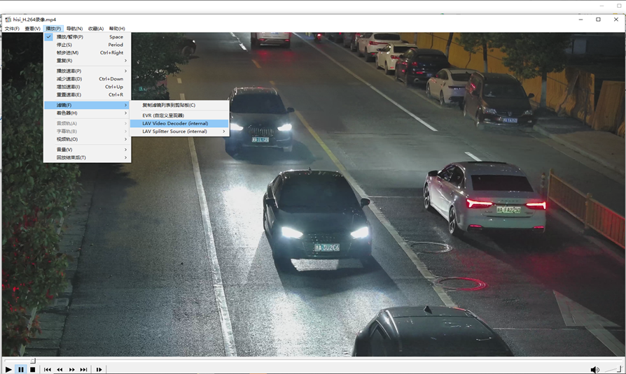
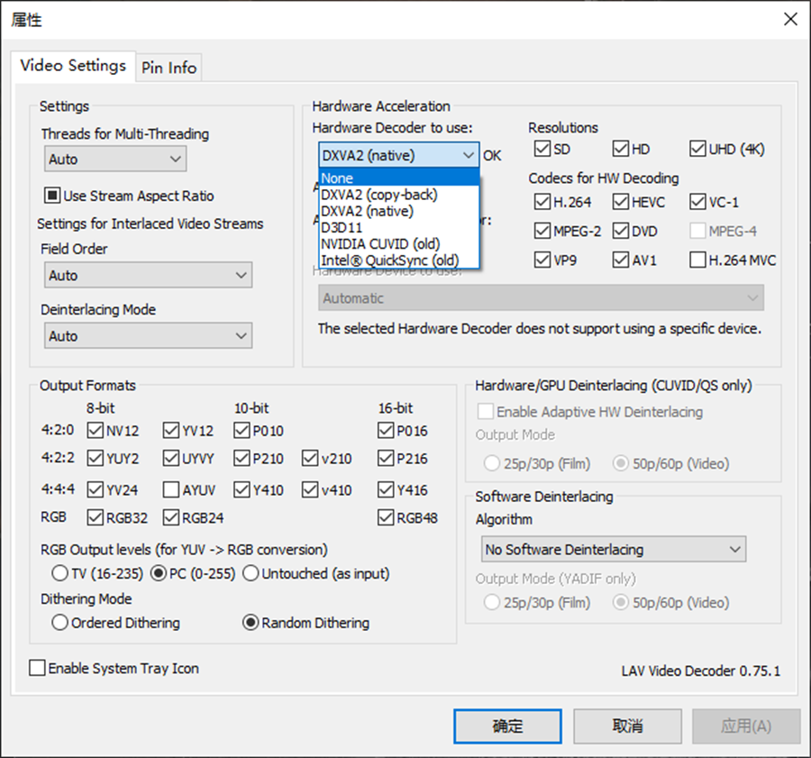
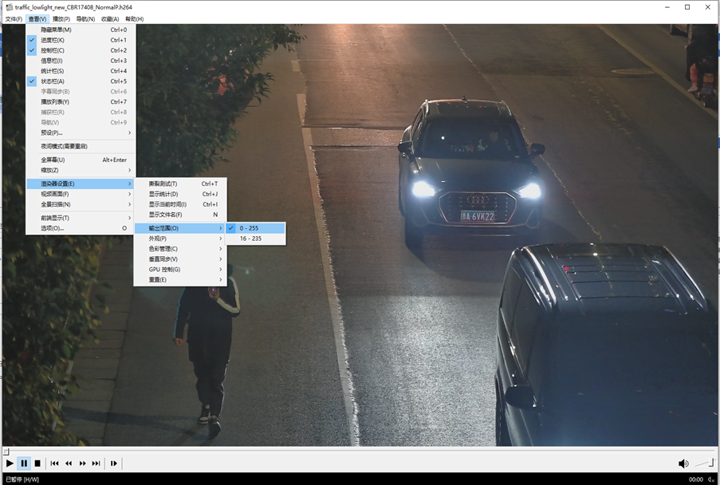
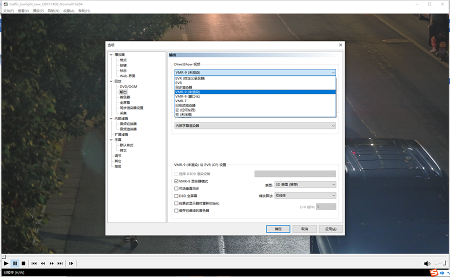
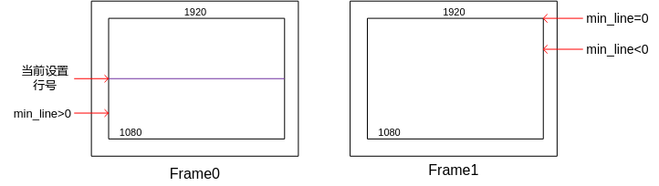

前言
前言
本文为使用MPP媒体处理软件开发的程序员而写，目的是为您在开发过程中遇到的问题提供解决办法和帮助。
说明：
- 未有特殊说明，Hi3516DV500与Hi3519DV500内容完全一致。
- 根据功能不同，将Hi3516CV610分为10B/00S/20S/00G/20G不同型号，差异部分请见《Hi3516CV610 超高清智慧视觉 SoC 产品简介》“型号配置差异”。
- Hi3516CV610不支持“VO”和“VDEC”的内容。
- Hi3511CV100不支持“VO”、“音频”、“FMU”、“卷绕”的内容。
与本文档相对应的产品版本如下。
本文档（本指南）主要适用于以下工程师：
- 技术支持工程师
- 软件开发工程师
在本文中可能出现下列标志，它们所代表的含义如下。


在寄存器定义表格中：
- 如果某一个比特的复位值“Reset”（即“Reset”行）为“？”，表示复位值不确定。
- 如果某一个或者多个比特的复位值“Reset”为“？”，则整个寄存器的复位值“Total Reset Value”为“-”，表示复位值不确定。
数据容量、频率、数据速率等的表达方式说明如下。
地址、数据的表达方式说明如下。
本文档中所用的频率均遵守SDH规范。简称和对应的标称频率如下。
修订记录累积了每次文档更新的说明。最新版本的文档包含以前所有文档版本的更新内容。
系统控制
日志信息
如何查看MPP的日志信息
【现象】
需要查看日志和调整log日志的等级。
【分析】
Log日志记录SDK运行时错误的原因、大致位置以及一些系统运行状态等信息。因此可通过查看log日志，辅助错误定位。
目前日志分为7个等级，默认设置为等级3。等级设置的越高，表示记录到日志中的信息量就越多，当等级为7时，系统的整个运行状态实时的被记录到日志中，此时的信息量非常庞大，会大大降低系统的整体性能。因此，通常情况下，推荐设置为等级3，因为此时只有发生错误的情况下，才会将信息记录到日志中，辅助定位绝大多数的错误。
【解决】
获取日志记录或修改日志等级时用到的命令如下：
- 查看各模块的日志等级，可以使用命令cat /proc/umap/logmpp，此命令会列出所有模块日志等级。
- 修改某个模块的日志等级，可使用命令echo“venc=4”> /proc/umap/logmpp，其中venc是模块名，与cat命令列出的模块名一致即可。
- 修改所有模块的日志等级，可以使用命令echo “all=4” > /proc/umap/logmpp。
- 获取日志记录，可以使用命令cat /dev/logmpp，此命令将打印出所有的日志信息；如果日志已读空，命令会阻塞并等待新的日志信息，可以使用Ctrl+C退出。如果不想阻塞等待日志信息，可以使用命令echo wait=0 > /proc/umap/logmpp取消阻塞等待。也可以使用open、read等系统调用来操作/dev/logmpp这个设备节点。
内存使用
OS保留内存和线程栈大小调整
【现象】Linux系统跑业务程序出现oom-killer。
【分析】可能的原因有
- OS内存不足
- 系统保留内存太小
【解决】
- 增大OS内存
-
增大系统保留内存，可以在/etc/profile中加入以下命令将系统保留内存设置为4M（大小可调整）
echo 2 >/proc/sys/kernel/randomize_va_space
echo 4096 >/proc/sys/vm/min_free_kbytes
【现象】
系统跑业务程序出现创建线程失败打印pthread_create: Resource temporarily unavailable的错误信息。
【分析】可能的原因有
- OS内存不足
- 线程栈空间太大
【解决】
- 增大OS内存
- 调整线程最大栈空间大小，调整方式有2种：
- Linux系统可以使用ulimit -s命令修改线程栈大小，例如将线程栈大小设置成1M：ulimit -s 1024，可以在/etc/profile中加入此命令则可以开机就设置栈空间大小。
- 使用pthread_attr_setstacksize在程序中改变线程栈大小。
如何根据具体产品调整媒体业务所占内存
【现象】
媒体业务需要占用一定的内存（主要占用MMZ内存）以支持业务正常运转，MPP平台按典型业务形态分配内存。用户产品内存使用紧张时，可根据实际情况尝试采用相关的策略调整内存分配大小。
【分析】
针对内存使用紧张的产品，交付包中的SDK软件提供了一些方法对内存的分配做调整。这里只简单描述精简内存措施，具体措施的使用方法请参考相关文档。
【解决】
- 确认OS及MMZ内存分配情况。
-
根据实际使用情况调整SDK相关业务内存占用。
- 产品应保证所有分辨率图像的大小应成整数倍的关系，如1080P为1920x1080，960H为960x480，而不应出现960H为960x756的类似情况；同时，也不应出现VI采集1920x1088大小的图像，而VENC编码为1920x1080的情况。
-
每个模块的buffer配置最小值。
参考文档：《MPP 媒体处理软件 V6.0 开发参考》。
-
公共VB刚好分配足够。
相关接口：ss_mpi_vb_set_cfg。
参考文档：《MPP 媒体处理软件 V6.0 开发参考》“系统控制”章节。
特别提醒各个模块输出数据使用的VB大小计算较为复杂，具体计算公式参考代码ot_buffer.h。
如何确认刚好：VB的proc信息里“pool_type = common, owner = common”的为公共VB池，要使公共VB池的min_free =0且logmpp里没有任何模块打印获取不到VB。
-
使用紧凑型段压缩
开启紧凑型段压缩，能够节省内存和带宽。如VI、VPSS通道可以使用紧凑型段压缩写出。
-
各模块DDR小型化措施。
参考文档：《性能╱带宽╱延时╱内存调优指南》。
MMZ信息
客户可以通过cat /proc/umap/media-mem命令查看当前系统MMZ信息和使用情况：
表示MMZ区域0，命名为anonymous，MMZ区间为(0x64100000, 0xBFFFFFFF)，大小为1506304KB。如果MMZ被分为多个区间会存在多个ZONE。
---MMZ_USE_INFO: total size=1512448KB(1477MB),used=86564KB(84MB + 548KB),remain=1425884KB(1392MB + 476KB),zone_number=2,block_number=16
表示整个MMZ统计信息，包括MMZ总大小、已使用大小、剩余大小、ZONE的个数等。
详见参考文档：《MPP 媒体处理软件 V6.0 开发参考》“Proc调试信息”章节。
性能相关
CPU性能Top统计波动大问题
【现象】使用top进行CPU占用率统计不够准确，可能出现波动，特别是在小业务场景，top统计的CPU占用率波动会很大。
【分析】Linux内核默认HZ值为100，这意味着每秒有100次时钟中断，每次中断的时间间隔为1/100秒（即10毫秒）。这导致调度和统计时间粒度较粗，从而影响统计精度。
【解决】如果期望获得更准确的CPU占用率统计值，可以考虑将内核的HZ值调整至更高（例如1000），以提高统计的时间分辨率。但需要注意的是，增加HZ值可能对系统性能产生额外的影响，因此在实施此更改前应进行充分的测试和评估。
管脚复用、时钟门控、系统控制在哪里配置？
在单Linux multi-core方案中，管脚复用（pinmux），管脚驱动能力、时钟门控（clk）和系统控制（sysctl）的配置，集中在interdrv/sysconfig中进行配置，其中pin_mux.c配置管脚复用，clk_cfg.c配置时钟门控，sys_ctrl.c配置系统控制，用户可以根据自身产品需要进行修改，编译成sys_config.ko，加载ko后配置生效。
修改内核选项后重编ko流程
【现象】
客户有修改内核选项的需求，重编内核后驱动ko需要重新编译。
【解决方案】
- 修改内核选项和重编内核，参照发布包中bsp目录下readme_cn.txt/readme_en.txt文件。
-
内核选项更改后，所有业务驱动需要重新编译链接。
进入发布包source/out/obj目录，执行命令make clean; make。
【注意事项】
- 生成驱动ko会自动拷贝至source/out/ko目录，旧的驱动ko会被覆盖。
- 默认指定的内核源码路径为发布包中bsp/linux/linux-5.x.y路径(x为内核版本)，如需指定内核路径，使用如下命令编译业务驱动: make clean; make KERNEL_ROOT=<内核源码路径>。
Quick schedule注意事项
Quick schedule为一个VDEC-VPSS-VO整体优化方案，需要端到端的协同才能达到整体省内存的最佳效果，具体操作方式如下（Hi3519DV500/Hi3516CV610/Hi3511CV100不支持）：
- 通过接口ss_mpi_vb_set_mod_pool_cfg和ss_mpi_vb_init_mod_common_pool创建VDEC VB（支持模块VB和用户VB，建议使用模块VB）。
- 通过sys接口ss_mpi_sys_set_schedule_mode设置系统调度模式为OT_SCHEDULE_QUICK快速调度模式；
- 通过接口ss_mpi_vdec_set_mod_param设置vb_src为OT_VB_SRC_MOD（建议使用模块VB）。
- 设置VDEC的mark模式为快速mark模式。通过接口ss_mpi_vdec_set_chn_param进行配置quick_mark_mode为OT_QUICK_MARK_ADAPT或者OT_QUICK_MARK_FORCE。
- 设置VDEC显示帧个数为0。通过接口ss_mpi_vdec_set_chn_param进行配置display_frame_num为0。
- 通过VPSS接口ss_mpi_vpss_enable_quick_send开启通道快速发送模式，同时建议不使能backup帧，通道模式设置为auto模式。
- 通过接口ss_mpi_vo_set_less_buf_attr设置VO省BUF开关使能enable为TD_TRUE，根据不同的客户场景设置省BUF的vtth值, 具体见如下VO详细描述。
-
通过接口ss_mpi_vo_set_video_layer_attr设置display_buf_len为2个buf，partition_mode为OT_VO_PARTITION_MODE_MULTI模式，推荐使用MULTI模式。
VDEC
- VDEC的快速调度功能仅在VDEC-VO和VDEC-VPSS-VO的绑定关系下才会生效。
-
开启快速调度功能后，绑定后级与非绑定后级通道混用时建议使用user vb模式，并且非绑定后级的通道需绑定到与绑定后级的通道不同的pool上，否则部分通道可能获取不到VB，从而导致不能解码的现象。
正确示例：假设当前共有6个解码通道，通道0~3为VDEC-VPSS-VO，通道4~5不绑定后级模块，可将通道0~3 attach到pool 0上，通道4~5 attach到pool 1上，pool 0按照省内存模式分配VB，pool 1按照正常模式分配VB。
-
快速释放参考帧模式默认为自适应模式（OT_QUICK_MARK_ADAPT）。
- 快速释放参考帧模式设置为强制模式（OT_QUICK_MARK_FORCE），能支持normalP和SmartP模式未设置跳帧参考的码流快速释放帧存，以达到节省VB的目的，但是如果编码器设置了跳帧参考或者参考帧个数大于2个，有解码兼容性风险，导致出现解码花屏。
- 开启复合解码功能解码增强层时，快速释放参考帧功能不生效，达不到省内存的效果。
- 开启快速调度功能后，不支持显示序输出、IPB解码模式和私有VB模式。
- 开启快速调度功能后，单个VDEC通道一绑多且后级绑定关系存在多个VO通道时，播放控制失效。
- 开启快速调度功能后，在播放控制场景下，如果需要和后级模块进行动态绑定和解绑，为了避免卡顿现象，建议在解绑之后绑定之前调用VPSS接口ss_mpi_vpss_reset_grp复位VPSS Group和调用VO接口ss_mpi_vo_clear_chn_buf重置pts。
- 开启快速调度功能后，在播放控制场景下，如果需要解码存在跳帧参考的码流，为了避免卡顿现象，建议设置解码通道的显示帧个数为1。
VPSS
- 开启快速调度功能后，VPSS会优先处理绑定VO的Group，绑定非VO的Group实时性会受到影响。
- 开启快速调度功能后，在场景功能正常的情况下，VPSS的proc信息中old undo统计次数可能会增加，有多个Group时，每个Group的old undo统计次数可能不均匀，是正常现象。
- VPSS快速发送模式的接口不支持动态设置，在通道未使能时才可以进行设置。
- 在使用VPSS快速发送模式时，不建议执行获取通道亮度和功能，否则获取的亮度和可能不准确。
- 开启快速调度功能后，多个VPSS通道绑定VO时，仅序号最小的通道（已使能）支持播放控制；单个VPSS通道绑定多个VO通道时，播放控制失效。
VO
- VO省buf的vtth值vtth2的取值范围是[2,vtth1],其中最大值vtth1为ss_mpi_vo_set_vtth设置的vtth值。
- 在快速调度场景时，如果vtth2接近最小值2，可以保证VO无裂屏风险，但是可能会导致帧率不够或丢帧；如果vtth2接近最大值vtth1，快速调度可保证帧率足够，但是存在裂屏风险。
-
当通道数目较少，图像分辨率较大时，建议vtth2配置等于最大值vtth1-1；当通道数目较多，图像分辨率较小时，建议vtth2配置接近最小值2，保证无裂屏风险。
-
其他解决方案根据自己性能和场景选择合适的vtth2的配置。
- 在省BUF快速调度场景时，推荐使用MULIT模式，不建议使用SINGLE模式，SINGLE模式通路会比MULTI模式整个通路多占用VB，此外多画面拼接时会调用VGS模块拼接占有VB时间较长，整通路VB缓存导致SINGLE模式的播放控制和画面切换等场景VB不足导致失败。
- 在省BUF快速调度场景时，推荐使用hide/show的方式进行画面切换，不建议使用disable/enable的方式进行画面切换，如果客户使用disable/enable的方式，建议销毁前端已经去使能的通道保证VB足够，保证画面切换可正常切换成功。
- 在省BUF快速调度场景，VDEC配置预览，VPSS配置AUTO时，如果前端VDEC/VPSS性能已接近性能瓶颈，VO 2buf无法完全保证不丢帧，推荐配置成3buf。
VI
本章节适用于Hi3519DV500/Hi3516DV500/Hi3516CV610/Hi3516CV608。
热成像探测器对接
请参考《thermo开发参考》"热成像探测器对接VI接口配置具体说明”章节。
仅Hi3519DV500/Hi3516DV500支持热成像对接。
VI YUV时序配置
VI进YUV的场景配置需要注意的地方比较多，首先要配置管脚复用，时钟选择（通过load脚本的-sensor参数传递，细节请参见(sysconfig.c）然后对MIPI、VI设备和VI PIPE做配置，差异点如下。
须知：
- VI进YUV且Bypass ISP的场景下(pipe属性中的bIspBypass配置为TD_TRUE)，强烈建议不调用ISP业务，避免内存等资源的浪费。
- 各接口的load脚本的参数，请参考各芯片的load脚本。
- 接线时序不同会导致dev component_mask配置不同，具体请参考《MPP 媒体处理软件 V6.0 开发参考》“视频输入”章节的掩码配置介绍。
BT.1120
SYS_CONFIG配置
- 使用ko目录下的load3519dv500/load3516cv610配置，sensor参数为BT.1120，通过指定该参数配置BT.1120的管脚复用：vi_bt1120_mode_mux(void)，CMOS时钟：cmos_clock_config(int index) 等配置。
- AD芯片默认使用sensor2时钟，若有其他使用场景可自行修改SYSCONFIG文件。
-
使用dev1 需传入-sensor1参数，使用dev3 需传入-sensor3参数。Hi3516CV610只有dev1支持BT时序。
MIPI配置
BT.1120时序不需要配置MIPI_RX，建议不调用MIPI_RX模块。
VI DEV配置
- 接口模式：OT_VI_INTF_MODE_BT1120
- Mask设置：component_mask[0] = 0x00FF0000，component_mask[1] = 0xFF000000
- 扫描格式：只支持逐行OT_VI_SCAN_PROGRESSIVE
- UV顺序：UV顺序根据实际输入时序确定是OT_VI_DATA_SEQ_VUVU还是OT_VI_DATA_SEQ_UVUV
- 数据类型：BT.1120进YUV数据，因此是OT_VI_DATA_TYPE_YUV
- Hi3516CV610仅支持DEV1和BT.1120时序
-
配置BT.1120时需使用VI DEV1/DEV3, Hi3516DV500 时仅支持DEV1。其管脚复用的配置在sysconfig文件已配置封装好，可通过对应load脚本指令进行对应的选择，详情请查看ko目录下的load脚本。
ot_vi_dev_attr vi_bt1120_dev_attr = { .intf_mode = OT_VI_INTF_MODE_BT1120, .work_mode = OT_VI_WORK_MODE_MULTIPLEX_1, .component_mask = {0x00FF0000, 0xFF000000}, .scan_mode = OT_VI_SCAN_PROGRESSIVE, .ad_chn_id = {-1, -1, -1, -1}, .data_seq = OT_VI_DATA_SEQ_UVUV, .sync_cfg = { .vsync = OT_VI_VSYNC_PULSE, .vsync_neg = OT_VI_VSYNC_NEG_LOW, .hsync = OT_VI_HSYNC_VALID_SIG, .hsync_neg = OT_VI_HSYNC_NEG_HIGH, .vsync_valid = OT_VI_VSYNC_VALID_SIG, .vsync_valid_neg = OT_VI_VSYNC_VALID_NEG_HIGH, .timing_blank = { /* hsync_hfb hsync_act hsync_hhb */ 0, 0, 0, /* vsync0_vhb vsync0_act vsync0_hhb */ 0, 0, 0, /* vsync1_vhb vsync1_act vsync1_hhb */ 0, 0, 0 } }, .data_type = OT_VI_DATA_TYPE_YUV, .data_reverse = TD_FALSE, .in_size = {1920, 1080}, .data_rate = OT_DATA_RATE_X1, };
VI PIPE配置
- PIPE的isp_bypass设置为TD_TRUE。
-
PIPE的像素格式设置为OT_PIXEL_FORMAT_YVU_SEMIPLANAR_422。
BT.656
SYS_CONFIG配置
- 使用ko目录下的load3519dv500/load3516cv610配置，sensor参数为BT.656，通过指定该参数配置BT.656的管脚复用：vi_bt656_mode_mux(void)，CMOS时钟：cmos_clock_config(int index) 等配置。
- AD芯片默认使用sensor2时钟，若有其他使用场景可自行修改SYSCONFIG文件。
- Hi3516CV610仅dev1支持BT.656。
-
使用dev1 需传入-sensor1参数，使用dev3 需传入-sensor3参数；若使用BT.656复合时则必须配置为 -sensor3 BT.656。
MIPI配置
BT.656时序不需要配置MIPI_RX，建议不调用MIPI_RX模块。
VI DEV配置
- 接口模式：OT_VI_INTF_MODE_BT656
- Mask设置：component_mask[0] = 0x00FF0000, component_mask[1] = 0x0
- 扫描格式：只支持逐行OT_VI_SCAN_PROGRESSIVE
- UV顺序：UV顺序根据实际输入时序确定是OT_VI_DATA_SEQ_UYVY/OT_VI_DATA_SEQ_VYUY/OT_VI_DATA_SEQ_YUYV/OT_VI_DATA_SEQ_YVYU。
- 数据类型：BT.656进YUV数据，因此是OT_VI_DATA_TYPE_YUV
- Hi3516CV610仅支持DEV1和BT.656时序
-
配置BT.656时需使用VI DEV1/DEV3, Hi3516DV500 时仅支持DEV1。其管脚复用的配置在sysconfig文件已配置封装好，可通过对应load脚本指令进行对应的选择，详情请查看ko目录下的load脚本。
ot_vi_dev_attr vi_bt656_dev_attr = { .intf_mode = OT_VI_INTF_MODE_BT656, .work_mode = OT_VI_WORK_MODE_MULTIPLEX_1, .component_mask = {0x00FF0000, 0x0}, .scan_mode = OT_VI_SCAN_PROGRESSIVE, .ad_chn_id = {-1, -1, -1, -1}, .data_seq = OT_VI_DATA_SEQ_UVUV, .sync_cfg = { .vsync = OT_VI_VSYNC_PULSE, .vsync_neg = OT_VI_VSYNC_NEG_LOW, .hsync = OT_VI_HSYNC_VALID_SIG, .hsync_neg = OT_VI_HSYNC_NEG_HIGH, .vsync_valid = OT_VI_VSYNC_VALID_SIG, .vsync_valid_neg = OT_VI_VSYNC_VALID_NEG_HIGH, .timing_blank = { /* hsync_hfb hsync_act hsync_hhb */ 0, 0, 0, /* vsync0_vhb vsync0_act vsync0_hhb */ 0, 0, 0, /* vsync1_vhb vsync1_act vsync1_hhb */ 0, 0, 0 } }, .data_type = OT_VI_DATA_TYPE_YUV, .data_reverse = TD_FALSE, .in_size = {1920, 1080}, .data_rate = OT_DATA_RATE_X1, };
VI PIPE配置
- PIPE的isp_bypass设置为TD_TRUE。
-
PIPE的像素格式设置为OT_PIXEL_FORMAT_YVU_SEMIPLANAR_422。
BT656复合配置
- BT656复合时，Hi3519DV500需使用DEV3，Hi3516DV500需使用DEV1。
- VI DEV 复合模式 work_mode配置为1/2/4路复合：OT_VI_WORK_MODE_MULTIPLEX_1/OT_VI_WORK_MODE_MULTIPLEX_2/OT_VI_WORK_MODE_MULTIPLEX_4。
-
使用多路复合时，需要绑定多个pipe。
以两路复合为例，DEV 3设置OT_VI_WORK_MODE_MULTIPLEX_2，DEV设备绑定pipe3、4。
Hi3516CV610不支持BT.656复合。
MIPI_YUV
SYS_CONFIG配置
- 使用ko目录下的load3519dv500/load3516cv610配置，sensor参数为mipi_ad。
-
AD芯片默认使用sensor0时钟，若有其他使用场景可自行修改SYSCONFIG文件。
MIPI配置
- 配置MIPI输入模式为INPUT_MODE_MIPI。
-
MIPI属性输入数据类型input_data_type根据输入的数据类型设置，若输入YUV422则设置为DATA_TYPE_YUV422_8BIT，输入为legacy YUV420则设置为DATA_TYPE_YUV420_8BIT_LEGACY， 输入为normal YUV420则设置为DATA_TYPE_YUV420_8BIT_NORMAL。
VI DEV配置
- 接口模式：根据输入的数据类型设置，若输入YUV422则设置为OT_VI_INTF_MODE_MIPI_YUV422，输入为legacy YUV420则设置为OT_VI_INTF_MODE_MIPI_YUV420_LEGACY，输入为normal YUV420则设置为OT_VI_INTF_MODE_MIPI_YUV420_NORM
- Mask设置：component_mask[0] = 0xFF000000，component_mask[1] = 0x00FF0000
- 扫描格式：只支持逐行OT_VI_SCAN_PROGRESSIVE
- UV顺序：UV顺序根据实际输入时序确定是OT_VI_DATA_SEQ_VUVU还是OT_VI_DATA_SEQ_UVUV
-
数据类型：MIPI进YUV数据，因此是OT_VI_DATA_TYPE_YUV
ot_vi_dev_attr vi_mipi_yuv422_dev_attr = { .intf_mode = OT_VI_INTF_MODE_MIPI_YUV422, .work_mode = OT_VI_WORK_MODE_MULTIPLEX_1, .component_mask = { 0xFF000000, 0x00FF0000}, .scan_mode = OT_VI_SCAN_PROGRESSIVE, .ad_chn_id = {-1, -1, -1, -1}, .data_seq = OT_VI_DATA_SEQ_UVUV, .sync_cfg = { .vsync = OT_VI_VSYNC_PULSE, .vsync_neg = OT_VI_VSYNC_NEG_LOW, .hsync = OT_VI_HSYNC_VALID_SIG, .hsync_neg = OT_VI_HSYNC_NEG_HIGH, .vsync_valid = OT_VI_VSYNC_VALID_SIG, .vsync_valid_neg = OT_VI_VSYNC_VALID_NEG_HIGH, .timing_blank = { /* hsync_hfb hsync_act hsync_hhb */ 0, 0, 0, /* vsync0_vhb vsync0_act vsync0_hhb */ 0, 0, 0, /* vsync1_vhb vsync1_act vsync1_hhb */ 0, 0, 0 } }, .data_type = OT_VI_DATA_TYPE_YUV, .data_reverse = TD_FALSE, .in_size = {1920, 1080}, .data_rate = OT_DATA_RATE_X1, };
VI PIPE配置
- PIPE的isp_bypass设置为TD_TRUE。
-
PIPE的像素格式设置为OT_PIXEL_FORMAT_YVU_SEMIPLANAR_422。
-
MIPI_YUV复合时，需要绑定多个pipe，以两路复合(1080P+720P)为例，dev设置为OT_VI_WORK_MODE_MULTIPLEX_1， dev绑定pipe3，4 ，pipe3设置vc_num 0，pipe 4设置vc_num1。
具体的，SYS_CONFIG配置、MIPI配置、VI DEV配置均以1080P配置，PIPE根据实际的分辨率配置。
ot_vi_pipe_attr vi_mipi_yuv_pipe_attr3 = { .pipe_bypass_mode = OT_VI_PIPE_BYPASS_NONE, .isp_bypass = TD_TRUE, .size = {1920, 1080}, .pixel_format = OT_PIXEL_FORMAT_YVU_SEMIPLANAR_422, .compress_mode = OT_COMPRESS_MODE_NONE, .frame_rate_ctrl = {-1, -1}, }; ot_vi_pipe_attr vi_mipi_yuv_pipe_attr4 = { .pipe_bypass_mode = OT_VI_PIPE_BYPASS_NONE, .isp_bypass = TD_TRUE, .size = {1080, 720}, .pixel_format = OT_PIXEL_FORMAT_YVU_SEMIPLANAR_422, .compress_mode = OT_COMPRESS_MODE_NONE, .frame_rate_ctrl = {-1, -1}, };通过接口ss_mpi_vi_set_pipe_vc_number（具体请见《MPP 媒体处理软件 V6.0 开发参考》“视频输入”章节）绑定指定的VC号。
-
Hi3516CV610中，VI在线不支持接入MIPI_YUV420，如需接入MIPI_YUV420，可使用PIPE1离线接入。
LVDS接YUV422
使用LVDS的方式传输YUV422数据时，YC两分量按16bitRAW组织后传输。需注意的配置如下：
-
MIPI_RX 配置lvds属性，input_data_type需配置为DATA_TYPE_RAW_12BIT；
combo_dev_attr_t LVDS_4lane_CHN0_SENSOR_XXX_12BIT_2M_NOWDR_ATTR = { .devno = 0, .input_mode = INPUT_MODE_LVDS, .data_rate = MIPI_DATA_RATE_X1, .img_rect = {0, 0, 1920, 1080}, .lvds_attr = { .input_data_type = DATA_TYPE_RAW_12BIT, .wdr_mode = HI_LVDS_WDR_MODE_NONE, .sync_mode = LVDS_SYNC_MODE_SOF, .vsync_attr = {LVDS_VSYNC_NORMAL, 0, 0}, .fid_attr = {LVDS_FID_NONE, HI_TRUE}, .data_endian = LVDS_ENDIAN_BIG, .sync_code_endian = LVDS_ENDIAN_BIG, .lane_id = {0, 2, 1, 3, -1, -1, -1, -1}, .sync_code = { { {0x002, 0x003, 0x000, 0x001}, // lane 0 {0x002, 0x003, 0x000, 0x001}, {0x002, 0x003, 0x000, 0x001}, {0x002, 0x003, 0x000, 0x001} }, { {0x012, 0x013, 0x010, 0x011}, // lane 1 {0x012, 0x013, 0x010, 0x011}, {0x012, 0x013, 0x010, 0x011}, {0x012, 0x013, 0x010, 0x011} }, { {0x006, 0x007, 0x004, 0x005}, // lane2 {0x006, 0x007, 0x004, 0x005}, {0x006, 0x007, 0x004, 0x005}, {0x006, 0x007, 0x004, 0x005} }, { {0x016, 0x017, 0x014, 0x015}, // lane3 {0x016, 0x017, 0x014, 0x015}, {0x016, 0x017, 0x014, 0x015}, {0x016, 0x017, 0x014, 0x015} }, } } }; -
VI DEV属性 intf_mode配置为OT_VI_INTF_MODE_MIPI，data_type配置为OT_VI_DATA_TYPE_YUV；
- VI PIPE属性 pixel_format配置为实际的像素格式OT_PIXEL_FORMAT_YUV_SEMIPLANAR_422，在VI PIPE按照YUV422写出。
VI DC时序配置
SYS_CONFIG配置
-
使用ko目录下的load3519dv500/load3516cv610配置，sensor参数为BT.1120，参考BT.1120的管脚复用配置：vi_bt1120_mode_mux(void) 。
注意：DC时序在BT.1120基础上增加了HS VS管脚，需要增加对应GPIO配置，如参考典型场景使用raw16接入，则增加管脚配置如下：
0x00EFF002C寄存器配置为0x1207，0x00EFF0030寄存器配置为0x1207。
sys_writel(iocfg3_base + 0x002C, 0x1207); /* VI_VS */ sys_writel(iocfg3_base + 0x0030, 0x1207); /* VI_HS */注意: Hi3516CV610依赖于整芯片的内部连线，DC时序需要在BT.1120的基础上选择为DVP模式;
-
使用dev1 需传入-sensor1参数，使用dev3 需传入-sensor3参数。
MIPI配置
DC 时序不需要配置MIPI_RX，建议不调用MIPI_RX模块。
VI配置
- 接口模式：OT_VI_INTF_MODE_DC
- Mask设置：根据实际输入格式确定，参考BT.1120配置。
- 数据类型：DC进RAW数据，因此是OT_VI_DATA_TYPE_RAW。
- 配置BT.1120时需使用VI DEV1/DEV3, Hi3516DV500 时仅支持DEV1。
VI RAW时序配置
仅提供Hi3519DV500/Hi3516DV500配置。
MIPI_YUV
SYS_CONFIG配置
使用ko目录下的load3519dv500配置，sensor参数为mipi_ad。
AD芯片默认使用sensor0时钟，若有其他使用场景可自行修改SYSCONFIG文件。
MIPI配置
combo_dev_attr_t MIPI_4lane_CHN0_xxx_2M_SP422_ATTR = {
.devno = 0,
.input_mode = INPUT_MODE_MIPI,
.data_rate = MIPI_DATA_RATE_X1,
.img_rect = {0, 0, 1920, 1080},
.mipi_attr = {
DATA_TYPE_YUV422_PACKED,
OT_MIPI_WDR_MODE_NONE,
{0, 1, 2, 3, -1, -1, -1, -1}
【差异点】
input_data_type需配置为DATA_TYPE_YUV422_PACKED。
VI DEV配置
ot_vi_dev_attr vi_mipi_yuv422_dev_attr = {
.intf_mode = OT_VI_INTF_MODE_MIPI_YUV422,
.work_mode = OT_VI_WORK_MODE_MULTIPLEX_1,
.component_mask = { 0xFFFF0000, 0x0},
.scan_mode = OT_VI_SCAN_PROGRESSIVE,
.ad_chn_id = {-1, -1, -1, -1},
.data_seq = OT_VI_DATA_SEQ_YVYU,
.sync_cfg = {
.vsync = OT_VI_VSYNC_PULSE,
.vsync_neg = OT_VI_VSYNC_NEG_LOW,
.hsync = OT_VI_HSYNC_VALID_SIG,
.hsync_neg = OT_VI_HSYNC_NEG_HIGH,
.vsync_valid = OT_VI_VSYNC_VALID_SIG,
.vsync_valid_neg = OT_VI_VSYNC_VALID_NEG_HIGH,
.timing_blank = {
/* hsync_hfb hsync_act hsync_hhb */
0, 0, 0,
/* vsync0_vhb vsync0_act vsync0_hhb */
0, 0, 0,
/* vsync1_vhb vsync1_act vsync1_hhb */
0, 0, 0
},
.data_type = OT_VI_DATA_TYPE_YUV,
.data_reverse = TD_FALSE,
.in_size = {1920, 1080},
.data_rate = OT_DATA_RATE_X1,
};
【差异点】
- Mask设置：component_mask[0] = 0xFFFF0000，component_mask[1] =0x0
- UV顺序data_seq = OT_VI_DATA_SEQ_YVYU(AD实际输出格式为UYVY)
VI PIPE配置
ot_vi_pipe_attr vi_mipi_yuv_pipe_attr = {
.pipe_bypass_mode = OT_VI_PIPE_BYPASS_BE,
.isp_bypass = TD_TRUE,
.size = {1920, 1080},
.pixel_format = OT_PIXEL_FORMAT_RGB_BAYER_16BPP_INDICATE_YUYV_PACKAGE_422,
.compress_mode = OT_COMPRESS_MODE_NONE,
.frame_rate_ctrl = {-1, -1},
};
VI CHN配置
chn_attr.pixel_format = OT_PIXEL_FORMAT_YVU_SEMIPLANAR_420
chn_attr.compress_mode = OT_COMPRESS_MODE_NONE,
BT.656
SYS_CONFIG配置
- 使用ko目录下的load3519dv500配置，sensor参数为bt656，通过指定该参数配置bt656的管脚复用：vi_bt656_mode_mux(void)，CMOS时钟：cmos_clock_config(int index) 等配置。
- AD芯片默认使用sensor2时钟，若有其他使用场景可自行修改SYSCONFIG文件。
-
使用dev1 需传入-sensor1参数，使用dev3 需传入-sensor3参数；若使用bt656复合时则必须配置为 -sensor3 bt656。
MIPI配置
BT.656时序不需要配置MIPI_RX，建议不调用MIPI_RX模块。
VI DEV配置
- 接口模式：OT_VI_INTF_MODE_BT656
- Mask设置：component_mask[0] = 0x00FF0000, component_mask[1] = 0x0
- 扫描格式：只支持逐行OT_VI_SCAN_PROGRESSIVE
- UV顺序：UV顺序根据实际输入时序确定是OT_VI_DATA_SEQ_UYVY/OT_VI_DATA_SEQ_VYUY/OT_VI_DATA_SEQ_YUYV/OT_VI_DATA_SEQ_YVYU。
- 数据类型：BT.656进YUV数据，因此是OT_VI_DATA_TYPE_YUV
-
配置BT.656时需使用VI DEV1/DEV3, Hi3516DV500 时仅支持DEV1。其管脚复用的配置在sysconfig文件已配置封装好，可通过对应load脚本指令进行对应的选择，详情请查看ko目录下的load3519dv500。
ot_vi_dev_attr vi_bt656_dev_attr = { .intf_mode = OT_VI_INTF_MODE_BT656, .work_mode = OT_VI_WORK_MODE_MULTIPLEX_1, .component_mask = {0x00FF0000, 0x0}, .scan_mode = OT_VI_SCAN_PROGRESSIVE, .ad_chn_id = {-1, -1, -1, -1}, .data_seq = OT_VI_DATA_SEQ_UVUV, .sync_cfg = { .vsync = OT_VI_VSYNC_PULSE, .vsync_neg = OT_VI_VSYNC_NEG_LOW, .hsync = OT_VI_HSYNC_VALID_SIG, .hsync_neg = OT_VI_HSYNC_NEG_HIGH, .vsync_valid = OT_VI_VSYNC_VALID_SIG, .vsync_valid_neg = OT_VI_VSYNC_VALID_NEG_HIGH, .timing_blank = { /* hsync_hfb hsync_act hsync_hhb */ 0, 0, 0, /* vsync0_vhb vsync0_act vsync0_hhb */ 0, 0, 0, /* vsync1_vhb vsync1_act vsync1_hhb */ 0, 0, 0 } }, .data_type = OT_VI_DATA_TYPE_YUV, .data_reverse = TD_FALSE, .in_size = {1920, 1080}, .data_rate = OT_DATA_RATE_X1, };
VI PIPE配置
- PIPE的isp_bypass设置为TD_TRUE。
-
PIPE的像素格式设置为OT_PIXEL_FORMAT_RGB_BAYER_8BPP_INDICATE_UYVY_PACKAGE_422。
VI CHN配置
mipi_switch多目接入
- 仅Hi3516CV610支持mipi_switch多目方案。
-
Hi3516CV610只有两个port口，理论上只能接入两路sensor，通过mipi_switch结合sensor从模式可以实现多路sensor分时接入，总体数据流如图1所示。
-
多目mipi_switch的使用步骤如下。
-
硬件上支持mipi_switch;
- 根据硬件连线配置管脚复用和sensor驱动；
-
软件配置分发属性。

硬件设计
- 原理图及PCB，具体请参考《HI3516CV610E4PERB_VER_A_SCH》及《HI3516CV610E4PERB_VER_A_PCB》。
- 管脚复用：请参考《SYS_CONFIG 配置指南》，根据实际使用的管脚，正确配置管脚复用。
sensor驱动适配
- 多目mipi_switch方案中，sensor驱动必须使用sensor从模式驱动，sensor从模式会配置SOC侧（Hi3516CV610）的HS/VS信号，具体参数详见《ISP开发参考》的ss_mpi_isp_set_sns_slave_attr接口。
-
若sensor支持VS下降沿触发帧起始信号，可以单独使用VS0驱动四个sensor，也可以VS0/VS1单独控制两组sensor，该场景下VS信号控制sensor及mipi_switch模式。
假设sensor时钟为24M，帧率为15fps，vs信号配置成50%的占空比。
vs_time = (24000000 / 15) = 1600000;
vs_cycle= 1/2 * hs_time = 800000;
则sensor驱动的从模式属性配置为：
ot_isp_slave_sns_sync slave_sync;
slave_sync.cfg.bytes = 0xc0000000;
slave_sync.vs_time = 1600000;
slave_sync.vs_cyc = 800000;
ot_mpi_isp_set_sns_slave_attr(slave_dev, &slave_sync);
-
若sensor不支持VS下降沿触发帧起始信号，需要使用VS结合HS0驱动共同驱动，该场景下VS控制sensor0/2，HS控制sensor1/3和mipi_switch，该模式的HS信号必须配置反向。
假设sensor时钟为24M，帧率为15fps，vs/hs信号配置成50%的占空比。
hs_time = vs_time = (24000000 / 15) = 1600000;
hs_cycle= vs_cycle= 1/2 * hs_time = 800000;
则sensor驱动的从模式属性配置为：
ot_isp_slave_sns_sync slave_sync;
slave_sync.cfg.bytes = 0xc0010000; /* HS反向 */
slave_sync.hs_time = 1600000;
slave_sync.vs_time = 1600000;
slave_sync.hs_cyc = 800000;
slave_sync.vs_cyc = 800000;
ot_mpi_isp_set_sns_slave_attr(slave_dev, &slave_sync);
-
若涉及起不同帧率场景（帧率在初始化时配置，不支持动态修改），先在cmos_fps_set函数中计算出对应帧率下的vs_time值，保存成变量，在调cmos_isp_init初始化时，根据存下来的vs_time，配置sensor驱动的从模式属性：
ot_isp_slave_sns_sync slave_sync;
slave_sync.vs_time = vs_time;
slave_sync.hs_time = vs_time;
slave_sync.hs_cyc = slave_sync.hs_time / 2;
slave_sync.vs_cyc = slave_sync.vs_time / 2;
ot_mpi_isp_set_sns_slave_attr(slave_dev, &slave_sync);
-
cmos_isp_init接口初始化时，需要根据pipe号，物理pipe与虚拟pipe配置不同的i2c.addr，以此来区分sensor，从而实现物理pipe与虚拟pipe独立控制sensor。
VI配置
调用ss_mpi_vi_set_distribute_grp_attr配置分发组属性，将两路的数据分发到指定pipe，pipe_id[0]接收硬件sensor0帧数据，pipe_id[1]接收硬件sensor1帧数据。

ISP软件
-
虚拟pipe需要独立控制sensor，起通路时，调用sensor 驱动接口pfn_set_bus_info设置正确的i2c节点号（以前传统方案虚拟pipe不控制sensor，i2c节点号会配置-1，mipi_switch推荐使用与同一Group的物理pipe相同的i2c节点号）。
-
mipi_switch场景推荐使用BE的AE统计信息。
-
不支持ISP动态切换分辨率。若需要切换分辨率，则需要销毁vi pipe, 退出isp后再重建。
-
所有pipe都需要调用ss_mpi_isp_run接口运行ISP Firmware，不支持使用ss_mpi_isp_run_once
-
所有pipe都不支持ss_mpi_isp_set_ctrl_param接口中断源选择isp_run_wakeup_select参数配置为BE帧结束中断。
-
所有pipe都不支持动态调用ss_mpi_isp_set_pub_attr接口修改帧率。
-
所有pipe都不支持调用ss_mpi_isp_set_exposure_attr设置auto_attr.ae_mode为 OT_ISP_AE_MODE_SLOW_SHUTTER模式。
-
一个Group内的所有pipe分辨率(包括裁剪配置)和帧率要保持一致。若所有pipe都是由同一个从模式VS信号触发的，则所有pipe帧率都需要一致。
-
若一个组内pipe采集图像不均匀时（如通路刚启动时），可能出现前几帧图像效果不佳的现象，建议一个Group的pipe优先创建，可以减少不均匀的帧数。
-
使用mipi_switch时，需要将vi/isp全部创建好后，再调用ss_mpi_vi_start_pipe开始采集，否则可能会造成第一帧数据异常且前几帧图像isp效果不佳。
VI2
本章节仅适用于Hi3511CV100。
VI YUV时序配置
VI进YUV的场景配置需要注意的地方比较多，首先要配置管脚复用，时钟选择（通过load脚本的-sensor参数传递，细节请参见(sysconfig.c）然后对MIPI、VI设备做配置，差异点如下。
- 各接口的load脚本的参数，请参考各芯片的load脚本。
- 接线时序不用会导致dev component_mask配置不同，具体请参考《MPP 媒体处理软件 V6.0 开发参考》“视频输入”章节的掩码配置介绍。
MIPI_YUV
MIPI配置
-
MIPI属性输入数据类型设置为DATA_TYPE_RAW_16BIT。
-
MIPI级联场景，主片发送的帧携带了随帧信息，则从片在配置MIPI时，需要包含主片随帧信息的高度。主片随帧信息的高度设置：随帧信息大小除以帧的宽度，再向上取整。
- 从片mipi_rx需要配置成csi模式。
VI DEV配置
- 接口模式：输入设置为OT_VI_MODE_MIPI_YUV422
- Mask设置：component_mask[0] = 0xFF000000，component_mask[1] = 0x00FF0000
-
UV顺序：UV顺序根据实际输入时序确定是OT_VI_IN_DATA_VUVU还是OT_VI_IN_DATA_UVUV
ot_vi_dev_attr vi_mipi_yuv422_dev_attr = { .intf_mode = OT_VI_MODE_MIPI_YUV422, .work_mode = OT_VI_WORK_MODE_MULTIPLEX_1, .component_mask = { 0xFF000000, 0x00FF0000}, .data_seq = OT_VI_IN_DATA_YVYU, .sync_cfg = { .vsync = OT_VI_VSYNC_PULSE, .vsync_neg = OT_VI_VSYNC_NEG_LOW, .hsync = OT_VI_HSYNC_VALID_SIG, .hsync_neg = OT_VI_HSYNC_NEG_HIGH, .vsync_valid = OT_VI_VSYNC_VALID_SIG, .vsync_valid_neg = OT_VI_VSYNC_VALID_NEG_HIGH, .timing_blank = { /* hsync_hfb hsync_act hsync_hhb */ 0, 0, 0, /* vsync0_vhb vsync0_act vsync0_hhb */ 0, 0, 0, /* vsync1_vhb vsync1_act vsync1_hhb */ 0, 0, 0 } }, .data_reverse_en = TD_FALSE, };
VI CHN配置
-
在MIPI级联场景中，主片配置了随帧信息，从片需要使能通道随帧信息处理，并根据主片的随帧信息大小配置从片通道的随帧信息大小。接口详情参考《MPP 媒体处理软件 V6.0 开发参考》ss_mpi_vi_set_chn_subsidiary_attr和ss_mpi_vi_get_chn_subsidiary_attr。
ot_vi_dev vi_dev = 0; ot_vi_chn vi_chn = 0; ot_size sub_info_size = { .width = 1920, // 根据主片设置的宽度而设置 .height = 2 // 根据主片计算出来的随帧信息高度而设置 }; ot_vi_chn_subsidiary_attr sub_attr = {0}; /* * MIPI YUV 420: combo_dev_attr.img_rect.height += 4; * start sys and base route ... */ ss_mpi_vi_disable_chn(vi_chn); ss_mpi_vi_get_chn_subsidiary_attr(vi_chn, &sub_attr); sub_attr.frame_info_en = TD_TRUE; sub_attr.frame_info_size = sub_info_size; ss_mpi_vi_set_chn_subsidiary_attr(vi_chn, &sub_attr); ss_mpi_vi_enable_chn(vi_chn); -
主片配置了随帧信息，并且输入多路，从片可以使能虚拟通道分发，配置通路帧与虚拟通道的映射关系及虚拟通道与后续模块的绑定关系，进行多路分发。接口详情参考《MPP 媒体处理软件 V6.0 开发参考》ss_mpi_vi_set_chn_distribute_attr和ss_mpi_vi_get_chn_distribute_attr。
ot_vi_pipe vi_chn = 0; ot_vi_chn_distribute_attr distribute_attr; /* * start sys and base route ... * enable frame info */ ss_mpi_vi_get_chn_distribute_attr(vi_chn, &distribute_attr); distribute_attr.enable = TD_TRUE; // 设置sensor_id 1与virt_chn 1的对应关系 distribute_attr.distribute[0].virt_chn = 1; distribute_attr.distribute[0].sensor_id = 1; // 设置sensor_id 2与virt_chn 2的对应关系 distribute_attr.distribute[1].virt_chn = 2; distribute_attr.distribute[1].sensor_id = 2; // 先关闭通道 ss_mpi_vi_disable_chn(vi_chn); ss_mpi_vi_set_chn_distribute_attr(vi_chn, &distribute_attr); ss_mpi_vi_enable_chn(vi_chn);
音频
PC如何播放由MPP编码的音频码流
PC如何播放由MPP编码的音频G711/G726/ADPCM码流
【现象】
由MPP编码的音频G711/G726/ADPCM码流不能直接用PC端软件播放。
【分析】
由MPP编码的音频码流，会在每一帧数据前添加一个语音帧头(详见《MPP 媒体处理软件 V6.0 开发参考》“9.2.2.3 语音帧结构”章节)，PC端软件不能识别语音帧头。
【解决】
PC端软件播放时，需要先去除每一帧数据前的语音帧头得到裸码流后，再添加WAV Header进行播放。去除语音帧头的操作如图1所示。

去除语音帧头参考代码：
int voice_get_raw_stream(short *voice_data, short *out_data, int sample_len)
{
int len = 0, out_len = 0;
short *copy_data, *copy_out_data;
int copy_sample_len = 0;
copy_sample_len = sample_len;
copy_data = voice_data;
copy_out_data = out_data;
while(copy_sample_len > 2)
{
len = copy_data[1]&0x00ff;
copy_sample_len -= 2;
copy_data += 2;
if(copy_sample_len < len)
{
break;
}
memcpy(copy_out_data, copy_data, len * sizeof(short));
copy_out_data += len;
copy_data += len;
copy_sample_len -= len;
out_len += len;
}
return out_len;
}
- ADPCM格式中，ADPCM_DVI4和ADPCM_ORG_DVI4适用于网络RTP传输使用，不能通过该方式在PC客户端上播放，详情请参考rfc3551标准。
- 添加WAV Header的操作略，客户可以根据WAV Header标准参考链接1 https://msdn.microsoft.com/en-us/library/dd390970(v=vs.85).aspx和链接2 http://www.moon-soft.com/program/FORMAT/windows/wavec.htm进行添加。
PC如何播放由MPP编码的OPUS码流
【现象】
由MPP编码的OPUS码流不能直接用PC端软件播放。
【分析】
由MPP编码的OPUS码流，会在每一帧数据前添加一个OPUS自定义帧头(详见《音频组件 API参考》“OPUS自定义帧结构”章节)，PC端软件不能识别该语音帧头。
【解决】
PC端软件播放时，需要先去除每一帧数据前的自定义帧头得到OPUS裸码流后，再对OPUS裸码流使用OGG、MP4、MATROSKA等封装格式进行封装后播放。去除OPUS自定义帧头的操作如图1所示。

去除OPUS自定义帧头参考代码：
int voice_get_raw_stream(short *voice_data, short *out_data, int sample_len)
{
int len = 0, out_len = 0;
short *copy_data, *copy_out_data;
int copy_sample_len = 0;
copy_sample_len = sample_len;
copy_data = voice_data;
copy_out_data = out_data;
while(copy_sample_len > 2)
{
len = copy_data[1]&0x00ff;
copy_sample_len -= 2;
copy_data += 2;
if(copy_sample_len < len)
{
break;
}
memcpy(copy_out_data, copy_data, len * sizeof(short));
copy_out_data += len;
copy_data += len;
copy_sample_len -= len;
out_len += len;
}
return out_len;
}
关于OPUS裸流使用OGG格式封装，详情请参考rfc7845标准。
MPP如何播放标准的音频码流
MPP如何播放标准的音频G711/G726/ADPCM码流
【现象】
MPP不能直接播放标准的音频G711/G726/ADPCM码流。
【分析】
MPP为了兼容上一代芯片，要求在音频裸码流每帧数据前添加语音帧头才能播放。
【解决】
MPP播放标准的音频G711/G726/ADPCM码流时，需要先获取RAW流数据，再根据每帧数据长度per_sample_len添加语音帧头才能播放。
-
获取RAW流数据：
如果码流添加了WAV Header，则需要先去除WAV Header。
-
获取每帧数据长度per_sample_len(计量单位为short型)：
表 1 每帧数据长度
每块字节数为IMA ADPCM的每块编码数据字节数，对应IMA ADPCM WAV Header的block_align (0x20-0x21, 2bytes)
说明：
- ADPCM格式中，仅支持IMA ADPCM格式，每采样点比特数(bits_per_sample)只支持4。
- 如果ADPCM码流添加了WAV Header，可以从WAV Header中获得每块字节数信息；如果为ADPCM裸码流，则需要从码流提供方获取每块字节数信息。
- 编码格式仅支持单声道编码格式。 -
添加语音帧头的操作如图1所示。
添加语音帧头参考代码：
int voice_add_header(short *input_data, short *voice_data, int per_sample_len,int input_sample_len) { int out_len = 0; short header[2]; short *copy_data, *copy_input_data; int copy_sample_len = 0; header[0] = (short)(0x001<<8) & (0x0300); header[1] = per_sample_len & 0x00ff; copy_sample_len = input_sample_len; copy_data = voice_data; copy_input_data = input_data; while(copy_sample_len >= per_sample_len) { memcpy(copy_data, header, 2 * sizeof(short)); out_len += 2; copy_data += 2; memcpy(copy_data, copy_input_data, per_sample_len * sizeof(short)); copy_input_data += per_sample_len; copy_data += per_sample_len; copy_sample_len -= per_sample_len; out_len += per_sample_len; } return out_len; }

MPP如何播放OGG封装格式的OPUS码流
【现象】
MPP不能直接播放OGG封装格式的OPUS码流。
【分析】
MPP要求在OPUS音频RAW流每帧数据前添加MPP自定义OPUS帧头才能播放。
【解决】
MPP播放OGG封装格式的OPUS码流时，需要先获取OPUS 裸流数据，再将每帧裸流数据长度添加到自定义帧头中才能播放。
-
获取裸流数据：
如果码流使用了OGG封装格式，则需要先提取出其中的每帧的裸流数据。
-
获取每帧裸流数据长度。
-
添加OPUS自定义帧头的操作如图1所示。
添加OPUS自定义帧头参考代码：
void int_to_char(unsigned int i, unsigned char ch[4]) { ch[0] = i>>24; ch[1] = (i>>16)&0xFF; ch[2] = (i>>8)&0xFF; ch[3] = i&0xFF; } void opus_add_header(unsigned char *input_data, int input_data_len, unsigned char *opus_data, int *opus_data_len) { int_to_char(input_data_len, opus_data); opus_data += 8; memcpy(opus_data, input_data, input_data_len); *opus_data_len = input_data_len + 8; return; }

解码需要正确配置MPP的OPUS解码器的采样率和通道数(详见《音频组件 API参考》“ot_adec_attr_opus”章节)。
为什么使能VQE后会有高频部分缺失
为什么使能VQE后会有高频部分缺失
【现象】
配置AI采样率(AISampleRate)为32kHz，使能VQE功能，配置VQE工作采样率(VQEWorkSampleRate)为16kHz；使能重采样功能，配置输出采样率(ResOutSampleRate)为48kHz，分析输出序列，发现8kHz以上高频部分缺失。
【分析】
VQE实际工作采样率仅支持8kHz和16kHz，考虑到客户需要，MPP在VQE封装了重采样层以支持8kHz到48kHz的任意标准采样率处理。当客户配置AISampleRate = 32kHz，VQEWorkSampleRate = 16kHz，ResOutSampleRate = 48kHz时，重采样层会先将数据由32kHz重采样到16kHz，经过VQE处理后，再由16kHz重采样到48kHz输出。流程如图1所示。

在进行重采样层：32kHz->16kHz时，造成了8kHz以上的高频部分缺失。
在当前应用场景中，输出序列的频段信息如下：
- 不使能VQE，不使能重采样：按照AISampleRate/2输出信息频段。如配置AI采样率为48kHz，输出信息频段为0 – 24kHz。
- 使能重采样，不使能VQE：取min(AISampleRate, ResOutSampleRate) /2 输出信息频段。如配置AI采样率16kHz，输出采样率32kHz，min(AISampleRate, ResOutSampleRate) = 16kHz，则输出信息频段为0 – 8kHz。
- 使能VQE，不使能重采样：取min(AISampleRate, VQEWorkSampleRate) /2 输出信息频段。如配置AI采样率为32kHz，VQEWorkSampleRate为16kHz，min(AISampleRate, VQEWorkSampleRate) = 16kHz，则输出信息频段为0 – 8kHz。
- 使能VQE，使能重采样：取min(AISampleRate, VQEWorkSampleRate, ResOutSampleRate) /2 输出信息频段。如配置AI采样率为32kHz，VQEWorkSampleRate为16kHz，重采样模块输出采样率为48kHz，则min(AISampleRate, VQEWorkSampleRate, ResOutSampleRate) = 16kHz，输出信息频段为0 – 8kHz。
- 配置采样率后，输出信息频段为采样率的1/2。
- 当前支持8kHz到48kHz标准采样率，分别为：8kHz，11.025kHz，12kHz，16kHz，22.05kHz，32kHz，44.1kHz，48kHz。
- AO处理流程类同AI处理流程。
G726码流的pop音问题
【现象】
在生成G726码流的过程中，反复销毁和创建编码通道，然后将获得的码流解码播放，发现存在pop音现象。
【分析】
G726协议编解码过程中需要使用到上一帧的历史信息作为预测编解码，这些历史信息在编解码每一帧的过程中不断更新，如果突然重启编码器，所有这些历史信息被复位，再次编码的时候用到了复位后的历史信息，导致与重置之前数据不衔接、有异常，解码时在重置编解码器的位置由于编码数据异常，从而会导致爆破音，用其他非MPP解码器解码也同样会出现pop音。对于需要依赖上一帧信息的编码协议，重置编解码器时，整个音频相关通路建议相应重置。
音频内置CODEC输出(AO输出)出现幅频响应异常
【现象】
测试AUDIO CODEC（DAC）输出(AO输出)幅频响应，出现2KHz以上频段幅频响应严重衰减。
【分析】
这是由于AUDIO CODEC控制寄存器（参考芯片手册）的dacl_deemph和dacr_deemph位开启去加重导致的。去加重是相对于预加重而言的，是对预加重的修正，如果输入给AO通道是经过预加重的音频信号，那么开启去加重功能可以恢复到正常频响；如果输入给AO通道的音频信号没有预加重，此时dacl_deemph和dacr_deemph位开启去加重（不为00），就会对幅频响应产生影响。本次测试是在关闭VQE功能下测试的。测试时，输入给AO通道的数据没有预加重，而AUDIO CODEC控制寄存器的dacl_deemph和dacr_deemph位未关闭（都不为00），故出现此问题。
【解决】
在AI通道，AUDIO CODEC控制寄存器是没有开设预加重功能的，所以AUDIO CODEC控制寄存器的dacl_deemph和dacr_deemph位默认是需要关闭的，都配置为00。预加重和去加重功能是匹配成对出现的，使用时需要注意。
【注意事项】
如果AUDIO CODEC控制寄存器没有dacl_deemph和dacr_deemph位则表示不支持去加重功能，此时需按默认配置使用，不允许额外配置。
如何使用静态库以及静态库注册功能
对于支持VQE静态库注册功能的芯片，如果需要使用静态库，需要做静态库注册，具体为根据实际应用场景选用所需的声音质量增强及重采样模块，再通过ss_mpi_audio_register_vqe_mod接口向音频系统注册选定的模块，具体使用方法参见《MPP 媒体处理软件 V6.0 开发参考》“音频”章节。
对于支持AAC静态库注册功能的芯片，可根据实际应用场景选择是否使用SBRENC、SBRDEC模块。当使用EAAC或者EAACPLUS编解码类型时，须在注册编解码器之前进行SBRENC、SBRDEC功能模块的静态注册，具体使用方法参见《音频组件 API参考》。
加载内置ACODEC模块出现pop音的解决方法
【现象】
在加载内置acodec模块时，单板的音频输出端存在pop音。
【分析】
以Hi3519DV500为例，其demo板功放的解mute操作在sys_config模块中实现，对应函数为amp_unmute_pin_mux，而内置acodec模块的加载顺序在sys_config模块之后，因此在acodec模块加载时功放已解mute，从而导致pop音。
【解决】
以Hi3519DV500为例，将sys_config模块中功放解mute的操作移至load3519dv500脚本中的insert_audio操作之后。
如何对多声道的音频数据进行交织处理
【现象】
MPP音频帧的不同声道数据地址是独立的，需要存放到同一个PCM文件。
【分析】
当音频的声道数多于一个时，音频数据的存放有两种格式，即交织的（interleave）和非交织的（non-interleave）。交织的是指同一个采样点的多声道数据依次放在一起；非交织的是指先放第一声道的所有采样点的数据，再放第二声道的所有采样点的数据，依次类推，直至全部声道存放完毕。
【解决】
以最常见的2声道为例，交织后的数据排布为L1/R1/L2/R2/…/Ln-1/Rn-1/Ln/Rn（L表示左声道，R表示右声道，数字表示第几个采样点）。
2声道音频数据交织的参考代码：
static td_void interleave_16bit(td_s16 *dest, td_s16 *src_left, td_s16 *src_right, td_u32 samples)
{
td_u32 i;
if ((dest == TD_NULL) || (src_left == TD_NULL) || (src_right == TD_NULL)) {
return;
}
for (i = 0; i < samples; i++) {
dest[2 * i] = *src_left; /* 2: 2chn */
dest[2 * i + 1] = *src_right; /* 2: 2chn */
src_left++;
src_right++;
}
}
如何对多声道的音频数据进行混音处理
【现象】
多个声道的音频数据需要混音到单声道进行输出。
【分析】
当只有一个物理输出通道时，不同来源的声音要整合到同一个音轨进行播放。
【解决】
以最常见的2声道为例，可以考虑采用线性叠加的方式实现混音。需要注意的是，2声道线性叠加可能会导致溢出，可在混音前对左右声道分别进行限幅。
2声道音频数据混音的参考代码：
static td_void remix_16bit(td_s16 *dest, td_s16 *src_left, td_s16 *src_right, td_u32 samples)
{
td_u32 i;
if ((dest == TD_NULL) || (src_left == TD_NULL) || (src_right == TD_NULL)) {
return;
}
for (i = 0; i < samples; i++) {
dest[i] = (*src_left) + (*src_right);
src_left++;
src_right++;
}
}
AO播放出现pop音的解决方法
【现象】
在往AO模块送音频帧的开始阶段，单板的音频输出端存在pop音。另外，在往AO模块送完音频帧之后，调节AO或者DAC的音量，单板的音频输出端也出现pop音。
【分析】
在往AO模块送音频帧时，最开始的采样点与之前最后一次的采样点的采样值差异较大，声音数据突变从而导致pop音。另外，在往AO模块送完音频帧之后，最后一次的采样点的采样值可能是较大的数值，此时调节后级的音量，也会出现声音数据突变从而导致pop音。
【解决】
在往AO模块送音频帧时，确保前1-2帧及最后1-2帧是静音数据或者是缓变的声音，即保证声音数据连续，且最后一个采样点是静音或者尽可能小的采样值。
音频时钟源被占用的解决方法
【现象】
如果VO模块和音频使用同一个时钟源，在调整VO输出制式的时候，音频输入输出的声音出现变调或者断续等异常现象。
【分析】
在某些芯片上，VO模块和音频使用同一个时钟源，在调整VO输出制式的时候，会调整PLL的分频系数，从而影响到音频的时钟分频，导致音频的工作时钟或者输出时钟不正常。
【解决】
切换音频使用的时钟源，可通过ss_mpi_audio_set_mod_param接口设置时钟源，使用方法请参考文档《MPP 媒体处理软件 V6.0 开发参考》中的“音频”章节。
音频AI与AO复用时钟功能的使用方法
【现象】
在AI和AO对接内置codec，或者使用同一组I2S时钟管脚对接外置codec的输入输出时，需要设置AI与AO复用同一个时钟，此时要求二者的采样率保持一致。
【分析】
在AI和AO对接内置codec时，由于内置codec只有一组工作时钟，因此要求AI与AO复用同一个时钟。
在某些芯片上，由于I2S管脚资源有限，一般需要使用同一组I2S时钟管脚对接外置codec的输入输出，且以对接AO的时钟为基准，此时亦要求AI与AO复用同一个时钟。
此外，如果使用场景上要求AI与AO的时钟严格同步，即使二者对接的设备类型不一样，此时也要求AI与AO复用同一个时钟。
【解决】
在设置AI的设备属性时，clk_share=1表示AI复用AO的时钟。需要注意的是，对于个别芯片，由于解决方案中的时钟选择已固定，clk_share配置无效，详情请参考文档《MPP 媒体处理软件 V6.0 开发参考》中的“音频”章节。
如何调节音频录制时的音量
不同类型输入设备有不同的音量调节方式。
-
当AI设备对接内置codec时，其音频输入通路如图1，可以通过OT_ACODEC_SET_INPUT_VOLUM接口调节内置codec的总输入音量，更多内置codec输入音量调节接口参考《MPP 媒体处理软件 V6.0 开发参考》的“音频”章节的“内置Audio Codec”小节。
-
当AI设备对接DMIC时，其音频输入通路如图2，可以通过ss_mpi_ai_set_dmic_gain接口调节内置DMIC的输入增益。
-
当AI设备对接外置codec时，其音频输入通路如图3，输入音量由外置codec进行调节。


如何调节音频播放时的音量
不同类型输出设备有不同的音量设置方式。
-
当AO设备对接内置codec时，其音频输出通路如图1，可以通过ss_mpi_ao_set_volume接口设置AO设备的输出音量，OT_ACODEC_SET_OUTPUT_VOLUME接口设置内置codec输出音量，更多内置codec输出音量调节接口参考《MPP 媒体处理软件 V6.0 开发参考》的“音频”章节的内置Audio Codec小节。
-
当AO设备对接内置HDMI时，其音频输出通路如图2，可以通过ss_mpi_ao_set_volume接口设置AO设备的输出音量。
-
当AO设备对接外置codec时，其音频输出通路如图3，可以通过ss_mpi_ao_set_volume接口设置AO设备的输出音量，外置codec输出音量由外置codec进行调节。


VO
VO用户时序如何配置
时序结构配置
在ss_mpi_vo_set_pub_attr接口中配置pub_attr> intf_sync为OT_VO_OUT_USER，然后配置sync_info结构体。关于sync_info结构体中各参数的解释如下：
typedef struct {
td_bool syncm; /* RW; sync mode(0:timing,as BT.656; 1:signal,as LCD) */
td_bool iop; /* RW; interlaced or progressive display(0:i; 1:p) */
td_u8 intfb; /* RW; interlaced bit width while output */
td_u16 vact; /* RW; vertical active area */
td_u16 vbb; /* RW; vertical back blank porch */
td_u16 vfb; /* RW; vertical front blank porch */
td_u16 hact; /* RW; horizontal active area */
td_u16 hbb; /* RW; horizontal back blank porch */
td_u16 hfb; /* RW; horizontal front blank porch */
td_u16 hmid; /* RW; bottom horizontal active area */
td_u16 bvact; /* RW; bottom vertical active area */
td_u16 bvbb; /* RW; bottom vertical back blank porch */
td_u16 bvfb; /* RW; bottom vertical front blank porch */
td_u16 hpw; /* RW; horizontal pulse width */
td_u16 vpw; /* RW; vertical pulse width */
td_bool idv; /* RW; inverse data valid of output */
td_bool ihs; /* RW; inverse horizontal synchronization signal */
td_bool ivs; /* RW; inverse vertical synchronization signal */
} ot_vo_sync_info;
各参数说明，如表1所示。
表 1 参数说明
下面以Hi3519DV500上配置384*288P@25fps的用户时序为例，sync_info的配置如下：
pub_attr->sync.info. syncm = 0;
pub_attr->sync.info. iop = 1;
pub_attr->sync.info. intfb = 0;
pub_attr->sync.info. vact = 288;
pub_attr->sync.info. vbb = 200;
pub_attr->sync.info. vfb = 112;
pub_attr->sync.info. hact = 384;
pub_attr->sync.info. hbb = 300;
pub_attr->sync.info. hfb = 216;
pub_attr->sync.info. hmid = 1;
pub_attr->sync.info. bvact = 1;
pub_attr->sync.info. bvbb = 1;
pub_attr->sync.info. bvfb = 1;
pub_attr->sync.info. hpw = 4;
pub_attr->sync.info. vpw = 5;
pub_attr->sync.info. idv = 0;
pub_attr->sync.info. ihs = 0;
pub_attr->sync.info. ivs = 0;
此时，VO的时钟配置应该为（384+300+216）*（288+200+112）*25=13500000，即VO的时钟应该配置为13.5M。
计算公式为：
（有效宽+水平后消隐+水平前消隐）*（有效高+垂直后消隐+垂直前消隐）*帧率=时钟。
时钟大小配置
通过ss_mpi_vo_set_user_sync_info接口来配置用户时序的时钟、分频比等信息。
具体的接口使用方法请参考文档《MPP 媒体处理软件 V6.0 开发参考》中的“视频输出”章节。
用户时序下MIPI_TX接口
MIPI_TX没有用户时序的说法，无论VO设置为用户时序还是通过枚举选择了某个时序，MIPI_TX接口都需要按照VO的时序结构，填充MIPI_TX中combo_dev_cfg_t结构体的对应成员。
切分割/画面切换
通道属性发生变化
切分割/画面切换：通道在显示状态下，其显示位置和大小发生变化。
建议的实现方式
通道已经使能或显示的状态下，凡涉及到修改该通道属性（调用ss_mpi_vo_set_chn_attr）（假设通道号为chn-x），建议按照以下步骤完成：
- 设置通道所在层批处理begin（ss_mpi_vo_batch_begin）
- 隐藏所有通道（ss_mpi_vo_hide_chn）
- 设置目标通道chn-x （可以是多个通道）的通道属性（ss_mpi_vo_set_chn_attr）
- 显示所有通道（ss_mpi_vo_show_chn）
- 设置通道所在层批处理end（ss_mpi_vo_batch_end）
可参考流程：
/*
* n --> m : change n chns to m chns.
* 设置目标通道chn-0,chn-1,…,chn-m的通道属性
*/
set_chn_m_attr(void)
{
/* batch begin */
ret = ot_mpi_vo_batch_begin(0);
if (TD_SUCCESS != ret) {
sample_prt("ot_mpi_vo_batch_begin(0) failed!\n");
}
/* hide all n chns */
for (i = 0; i < n; i++) {
ret = ot_mpi_vo_hide_chn(0, i);
if (TD_SUCCESS != ret) {
sample_prt("ot_mpi_vo_hide_chn(0,%d) failed!\n", i);
}
}
/* change all m chns’s attr */
for (j = 0; j < m; j++) {
ret = ot_mpi_vo_set_chn_attr(0, j, &chn_attr);
if (TD_SUCCESS != ret) {
sample_prt("ot_mpi_vo_set_chn_attr(0,%d) failed!\n", j);
}
}
/* show all m chns*/
for (i = 0; i < m; i++) {
s32Ret = ot_mpi_vo_show_chn(0, i);
if (TD_SUCCESS != s32Ret) {
sample_prt("ot_mpi_vo_show_chn(0,%d) failed!\n", i);
}
}
/* batch end */
s32Ret = ot_mpi_vo_batch_end(0);
if (TD_SUCCESS != s32Ret) {
sample_prt("ot_mpi_vo_batch_end(0) failed!\n");
}
}
注意事项
- 切分割/画面切换时建议使用批处理进行操作。
- 不使用批处理时，需严格按照建议的实现方式中步骤2~步骤4进行操作，即设置完所有通道的通道属性之后，再统一显示所有通道。否则已显示通道会占用显示VB，导致其他通道在设置通道属性时无法重新分配显示VB，最终出现画面卡住。
视频同步方案
视频同步是指一个芯片的不同VO设备或者不同芯片的VO设备实现视频同步输出。视频同步场景一般是多路切分的解码经过VPSS再送给多个VO设备进行拼接，为了保证拼接效果，需要对各VO设备进行视频同步操作。
实现原理
视频同步方案的基本实现原理是保证对VO发送视频帧的同步以及VO输出时钟的同步。
-
时钟同步：
通过模块参数dev_clk_ext_en控制，在系统初始化之前置此模块参数为1（默认为0），代表VO设备的接口时钟由用户自己配置，在业务启动后，用户可以采用关各VO设备时钟再开时钟的方式保证各设备时钟的同步输出。
-
发送帧同步：
ot_user驱动提供了对VO设备中断的响应函数，用户可以藉此设置监听响应机制，等到中断上报后再对VO设备做发送视频帧操作，用户可在此基础上自行增加一些同步发送帧机制。
-
设备开关：
在时钟同步的基础上增加了对设备开关的外部调用函数ot_vo_enable_dev_export / ot_vo_disable_dev_export（需要保证接口时钟开启的时候进行操作），实现对各设备的同时显示和关闭。
调用者应有的声明格式：
- extern td_void ot_vo_enable_dev_export (ot_vo_dev dev);
- extern td_void ot_vo_disable_dev_export (ot_vo_dev dev);
开机画面平滑/非平滑过渡
平滑过渡是指开机画面平滑地切换至业务画面，期间不关闭VO以及MIPITX、BT1120、HDMI、VGA、CVBS等接口的显示输出，画面过渡流畅，不黑屏，信号不中断，否则称切换过程为非平滑过渡。
- 开机画面：进入uboot后，使用开机画面命令或相关函数启动的画面。
-
业务画面：进入内核后，使用VO的MPI接口启动的画面。
操作步骤
平滑过渡要求业务画面继续沿用开机画面下设置的设备号、接口类型和时序类型，操作步骤如下（以下步骤中接口类型相关的操作根据具体情况选择）：
- 进入uboot界面，启动开机画面进行显示。
-
进入内核界面，根据不同的接口可能有不同的操作：
- 操作MIPI_TX：加载ko时设置平滑过渡模块参数g_smooth 为1：insmod ot_mipi_tx.ko g_smooth=1；
- 操作VO：使用ss_mpi_vo_set_pub_attr设置设备属性，设备号dev、背景色bg_color、接口类型intf_type、时序类型intf_sync设置、用户时序信息sync_info（用户时序时有效）与开机画面一致；使用ss_mpi_vo_enable使能设备；开机画面是用户时序时，注意业务画面不要使用ss_mpi_vo_set_user_sync_info配置时钟相关的参数（或者配成一样的时钟参数），这样，业务画面就会直接沿用开机画面的时钟配置，否则，如果ss_mpi_vo_set_user_sync_info配置了不同的时钟参数生效可能导致显示异常；
- 操作HDMI：正常开启HDMI的流程中去掉设置hdmi属性ss_mpi_hdmi_set_attr）的部分，这样做是为了使有开机画面情况下的内核操作步骤与无开机画面情况下的内核操作步骤能够尽量归一化；或者无任何HDMI操作，这样做切换将会更加的流畅；可根据实际需要进行选择；
- 操作MIPI_TX：无任何MIPI_TX操作；
预期效果：视频层开机画面不再显示，图形层开机画面继续显示，未被视频层和图形层覆盖的区域将显示VO设备背景色（直通时显示开机画面背景色，非直通时显示业务画面背景色）。
-
操作视频层：设置并使能视频层、通道；
-
操作图形层：使用open操作文件/dev/fbn。
预期效果：显示视频层业务画面，显示图形层业务画面，未被视频层和图形层覆盖的区域将显示VO设备背景色（直通时显示开机画面背景色，非直通时显示业务画面背景色）。
-
按一般流程关闭业务画面。
非平滑过渡不要求业务画面继续沿用开机画面下设置的设备号、接口类型和时序，操作步骤如下（以下步骤中接口类型相关的操作根据具体情况选择）：
- 进入uboot界面，启动开机画面显示。
-
进入内核界面，根据不同的接口可能有不同的操作：
- 操作MIPI_TX: 加载ko时设置平滑过渡模块参数g_smooth 为0：insmod ot_mipi_tx.ko g_smooth=0;
- 操作HDMI：调用HDMI相关接口ss_mpi_hdmi_init，ss_mpi_hdmi_open，ss_mpi_hdmi_set_attr，ss_mpi_hdmi_start，ss_mpi_hdmi_stop、ss_mpi_hdmi_close、ss_mpi_hdmi_deinit禁用HDMI；
- 操作MIPI_TX：使用open打开文件/dev/ot_mipi_tx，然后调用OT_MIPI_TX_DISABLE接口禁用MIPI_TX设备；
- 操作VO：使用ss_mpi_vo_set_pub_attr设置设备属性，设备号dev、背景色bg_color、接口类型intf_type、时序类型intf_sync设置、用户时序信息sync_info（用户时序时有效）与开机画面一致；调用接口ss_mpi_vo_disable禁用VO设备；
预期效果：开机画面停止显示或信号中断。
-
使用ss_mpi_vo_set_pub_attr设置新的设备属性，使用ss_mpi_vo_enable使能设备；调用HDMI的接口ss_mpi_hdmi_init，ss_mpi_hdmi_open，ss_mpi_hdmi_set_attr，ss_mpi_hdmi_start，设置并使能HDMI；调用MIPI_TX的接口OT_MIPI_TX_SET_DEV_CFG，OT_MIPI_TX_SET_CMD，OT_MIPI_TX_ENABLE，设置并使能MIPI_TX。
预期效果：视频层开机画面不再显示，图形层开机画面继续显示，未被视频层和图形层覆盖的区域将显示VO设备背景色（直通时显示开机画面背景色，非直通时显示业务画面背景色）。
-
操作视频层：设置并使能视频层、通道；
- 操作图形层：使用open操作文件/dev/fbn，以关闭并另起图形层画面。
- 按一般流程关闭业务画面。
数据透传
数据透传是指输入VO的数据与VO输出的数据保持不变，使用VO提供的视频接口如MIPI、BT.1120可实现数据透传（以下简称“透传接口”）。数据透传场景中VO称为发送端，连接到透传接口的另一端称为接收端，透传场景设置步骤如下：
- 设置VO输出接口为透传接口，调用ss_mpi_vo_set_dev_param打开VO数据透传功能，按一般流程启动VO。
-
根据VO接口类型，匹配设置接收端接口类型，如VO设置为BT.1120接口输出，则接收端设备需按照BT.1120接口进行配置，然后按一般流程启动接收端。
BT.1120
发送端VO的BT.1120配置可参考《MPP 媒体处理软件 V6.0 开发参考》“视频输出”章节。
接收端VI的BT.1120参考“VI YUV时序配置”中的“BT.1120”小节。
MIPI_TX RAW16BIT格式透传
发送端VO的MIPI_TX配置可参考《MPP 媒体处理软件 V6.0 开发参考》“视频输出”章节。
发送端MIPI_TX配置示例如下（以1920x1080分辨率为例）：
// mipi_tx
combo_dev_cfg_t mipi_tx_combo_dev_cfg = {
.devno = 0,
.lane_id = {
0, 1, 2, 3,
},
.out_mode = OUT_MODE_CSI,
.video_mode = BURST_MODE,
.out_format = OUT_FORMAT_RAW_16BIT,
.sync_info = {
.hpw = 44 ,
.hbp = 148 ,
.hact = 1920,
.hfp = 88,
.vpw = 5 ,
.vbp = 36,
.vact = 1080,
.vfp = 4,
},
.phy_data_rate = tx_phy_data_rate,
.pixel_clk = tx_pixel_clk,
};
对应的MIPI_RX配置如下（以1920x1080分辨率为例）：
// mipi rx ext data (使用OT_MIPI_SET_EXT_DATA_TYPE接口设置)
vi_mipi_ext_data_attr ext_data_attr =
{
.ext_data_bit_width[0] = 16,
.ext_data_bit_width[1] = 16,
.ext_data_bit_width[2] = 16,
.ext_data_type[0] = 0x2E,
.ext_data_type[1] = 0x2E,
.ext_data_type[2] = 0x2E,
};
// mipi_rx
combo_dev_attr_t mipi_rx_combo_dev_cfg =
{
.devno = 0,
.input_mode = INPUT_MODE_MIPI,
.data_rate = MIPI_DATA_RATE_X1,
.img_rect = {0, 0, 1920, 1080},
{
.mipi_attr =
{
DATA_TYPE_RAW_16BIT,
OT_MIPI_WDR_MODE_NONE,
{0, 1, 2, 3, -1, -1, -1, -1}
}
}
};
MIPI_TX YVU422 SEMIPLANAR格式透传
发送端VO的MIPI_TX配置可参考《MPP 媒体处理软件 V6.0 开发参考》“视频输出”章节。
发送端MIPI_TX配置示例如下（以1920x1080分辨率为例）：
// mipi_tx
combo_dev_cfg_t mipi_tx_combo_dev_cfg = {
.devno = 0,
.lane_id = {
0, 1, 2, 3,
},
.out_mode = OUT_MODE_CSI,
.video_mode = BURST_MODE,
.out_format = OUT_FORMAT_YUV422_8BIT,
.sync_info = {
.hsa_pixels = 44 ,
.hbp_pixels = 148 ,
.hact_pixels = 1920,
.hfp_pixels = 88,
.vsa_lines = 5 ,
.vbp_lines = 36,
.vact_lines = 1080,
.vfp_lines = 4,
},
.phy_data_rate = tx_phy_data_rate, /* 2259 */
.pixel_clk = tx_pixel_clk, /* 148500 */
};
对应的MIPI_RX和VI设备配置如下（以1920x1080分辨率为例）：
// mipi_rx
combo_dev_attr_t mipi_rx_combo_dev_cfg =
{
.devno = 0,
.input_mode = INPUT_MODE_MIPI,
.data_rate = MIPI_DATA_RATE_X1,
.img_rect = {0, 0, 1920, 1080},
{
.mipi_attr =
{
DATA_TYPE_YUV422_8BIT,
OT_MIPI_WDR_MODE_NONE,
{0, 1, 2, 3, -1, -1, -1, -1}
}
}
};
// vi设备
static ot_vi_dev_attr g_mipi_yuv422_dev_attr = {
/* 接口模式 */
.intf_mode = OT_VI_INTF_MODE_MIPI_YUV422,
/* 1、2、4路工作模式, 无效参数 */
.work_mode = OT_VI_WORK_MODE_MULTIPLEX_1,
/* mask分量 */
.component_mask = {0xFF000000, 0x3FC000},
/* 逐行/隔行，不支持隔行 */
.scan_mode = OT_VI_SCAN_PROGRESSIVE,
/* ad chn id, 无效参数 */
.ad_chn_id = {-1, -1, -1, -1},
/* data seq */
.data_seq = OT_VI_DATA_SEQ_UVUV,
/* 时序同步配置 */
.sync_cfg = {
.vsync = OT_VI_VSYNC_PULSE,
.vsync_neg = OT_VI_VSYNC_NEG_LOW,
.hsync = OT_VI_HSYNC_VALID_SIG,
.hsync_neg = OT_VI_HSYNC_NEG_HIGH,
.vsync_valid = OT_VI_VSYNC_VALID_SIG,
.vsync_valid_neg = OT_VI_VSYNC_VALID_NEG_HIGH,
.timing_blank = {
/* hsync_hfb hsync_act hsync_hhb */
0, 0, 0,
/* vsync0_vhb vsync0_act vsync0_hhb */
0, 0, 0,
/* vsync1_vhb vsync1_act vsync1_hhb */
0, 0, 0
}
},
/* data type */
.data_type = OT_VI_DATA_TYPE_YUV,
/* data reverse */
.data_reverse = TD_FALSE,
/* input size */
.in_size = {1920, 1080},
/* data rate */
.data_rate = OT_DATA_RATE_X1,
};
开机画面调试
tftp使用注意事项
在uboot中调试使用startvl，startgx命令调试开机画面时，可能用到tftp命令，tftp命令使用示例如下所示：
通过tftp命令只能将文件下载到DDR前512MB的地址空间，第一个参数只能是DDR前512MB地址空间，即[ddr_start_addr, ddr_start_addr + 0x20000000 – 1]，ddr_start_addr表示DDR起始地址。
如果需要把文件加载到512M以上的地址空间，则可以先通过tftp命令将文件下载到512MB以内的地址空间，再通过cp.b命令将文件拷贝到512MB以上的地址空间，cp.b命令使用示例如下：
上述cp.b命令中，第一个参数为源地址，第二个参数为目的地址，第三个参数为长度。
不同场景下，销毁VDEC通道，VO显示差异说明
- 场景1：VDEC-VO（VDEC系统绑定VO），销毁VDEC通道时，VO显示为背景色；
- 场景2：VDEC-VPSS-VO（VDEC系统绑定VPSS，VPSS系统绑定VO），销毁VDEC通道时，VO显示为最后一帧图像。
原因为在私有VB模式下，销毁VDEC通道或解绑定VDEC与后级模块时，VDEC会主动回收私有VB，造成：
- 场景1的VO无输入图像而显示背景色；
- 场景2的VO可继续使用VPSS输出的VB而显示最后一帧。
VENC
-
不同增帧模式(OT_VENC_DUPLICATE_FRAME_STRATEGE_RECODE/OT_VENC_DUPLICATE_FRAME_STRATEGE_COPY)下如何配置GOP大小和帧率控制
JPEG量化表配置注意事项
目前的JPEG编码，如果配置的qfactor过低，会导致编码出来的JPEG图片出现偏色等现象，原因是色度的量化步长过大。用户可以通过调用ss_mpi_venc_set_jpeg_param 接口修改色度的量化表，限制色度的量化步长，避免偏色等现象。具体的qfactor与量化表的关系请见RFC2435标准。修改色度的量化表有可能会导致JPEG图片容量变大，用户需要权衡图像质量和JPEG图像容量。
JPEG发灰发蒙问题
具体表现：与视频对比，JPEG图像发蒙，通透性不好。
原因分析：这是由于不同显示器或不同码流分析工具显示的差别导致的。有些分析工具在解析H.265或H.264视频码流时无法解析vui_parameters_present_flag语法元素，导致人眼观看视频码流和YUV源时对比度不同。进而在对比视频码流和JPEG编码图片时，人眼感官两者清晰度不同，错误的判断JPEG图像效果有问题，发灰发蒙，其实JPEG编码后结果和原始YUV整体清晰度其实是保持一致的。
解决方法：
以MPC码流播放软件为例，修改播放软件配置，使视频录像的对比度与JPEG的对比度在人眼视觉上基本相当。
-
将播放->滤镜->LAV Video Decoder(internal)->Hardware Decoder to use配置成None；


-
查看->渲染器设置->输出范围设置为0~255；

-
选项->回放->输出->DirectShow设置为VMR-9(未渲染)；

-
关闭播放器再重新打开码流。
P帧帧内刷新功能会有较明显的画面滚动效果
具体表现：在P帧开启Intra Refresh功能，画面会出现较明显的滚动效果，面对纹理较多的场景更为明显。
原因分析：这个算法设计背景：I帧可能会带来带宽的突然增大，也可能会带来严重的呼吸效应，为消除这一部分的影响，将不再插I帧，而是在后续的P帧刷新一定行数的I块，但是I块和P块参考原理是不同的，I块是空域参考而P块是时域参考，由于参考的不连续性，会导致在一些场景下出现滚动效果。
解决方法:
- 找到背景非常平滑的场景；
- 提升码率并同时调节refresh_num参数，具体调整到多少需要根据场景进行尝试。
质量均衡如何使用
在ss_mpi_venc_set_quality_balance接口中配置quality_balance结构体，结构体各个参数的描述如下：
typedef struct {
td_bool enable;
td_bool level_adaptive_en;
td_u32 interval;
td_u32 target_ratio;
td_s32 ratio_offset_i;
td_s32 ratio_offset_p;
td_u32 quality_switch;
td_u8 threshold[OT_VENC_MAX_QUALITY_BALANCE_NUM];
td_u8 level[OT_VENC_MAX_QUALITY_BALANCE_NUM];
} ot_venc_quality_balance;
各个参数说明如下所示：
主要参数使用说明：
- level_adaptive_en：qp_level自适应是否使能，当level_adaptive_en为1时内部开启自适应生成target_ratio，用户无需配置target_ratio。当level_adaptive_en为0时需要用户自行配置target_ratio。
- threshold[OT_VENC_MAX_QUALITY_BALANCE_NUM]，level[OT_VENC_MAX_QUALITY_BALANCE_NUM]：threshold为衡量宏块复杂度的一组阈值，这组阈值通过quality_switch分割成两段，每段都是从小到大的顺序依次排列，每个阈值的取值范围为[0,255]。这组阈值用于在进行宏块级码率控制时，根据图像复杂度对每个宏块的Qp进行适当的调整。对于H.264/H.265协议，宏块级码率控制既有加QP，也有减QP，quality_switch决定这组阈值的数组下标，前一段做减QP，后一段做加QP，加减幅度由level控制。level为qp调节幅度的一组参数，这组参数控制QP加减幅度，每个参数的取值范围为[0,15]。加减幅度的数组长度由quality_switch控制，quality_switch为level和threshold的数组下标。假设quality_switch为4，target_ratio为45，threshold为[0,0,0,7,19,13,13,26]，被quality_switch分成两段[0,0,0,7,19]和[13,13,26]，level为[1,1,1,1,1,1,1,1]，被quality_switch分成两段[1,1,1,1,1]和[1,1,1]。C表示当前宏块的复杂度且为60，60-45=15，15为正数，落在减QP段即threshold为[0,0,0,7,19],15大于前四个数，因此对应减去level前四个数之和1+1+1+1=4，此时宏块QP减4。C为30时，30-45=-15，-15为负数，落在加QP段即threshold为[13,13,26]，-15的绝对值为15小于26，大于前两个数，因此对应加去level前两个数之和1+1=2，此时宏块QP加2。
不同增帧模式(OT_VENC_DUPLICATE_FRAME_STRATEGE_RECODE/OT_VENC_DUPLICATE_FRAME_STRATEGE_COPY)下如何配置GOP大小和帧率控制
以实际帧率20，目标帧率30为例进行说明。为方便两种策略说明，OT_VENC_DUPLICATE_FRAME_STRATEGE_RECODE简称为YUV重编增帧，OT_VENC_DUPLICATE_FRAME_STRATEGE_COPY简称为码流拷贝增帧。
-
当1个GOP包含1秒时长时
- YUV重编增帧：是在启动编码前实现增帧，等效于前级送30帧YUV其中有10帧是内容重复的，因此设置GOP为30，编码前增帧通过chn_param 中（src_frame_rate，dst_frame_rate）控制，设置为（20，30）。此时编码的实际帧率是30帧，为保证码控统计准确，码控参数中src_frame_rate，dst_frame_rate按照实际帧率都设置为30。
- 码流拷贝增帧：是编码后实现增帧，编码过程中按照前级送帧的实际帧率编码。实际的编码帧率是20帧，因此GOP 设置20，实际输出码流再拷贝增帧后GOP变为30。编码后增帧通过chn_param 中（src_frame_rate，dst_frame_rate）控制，配置为（20，30）。因为编码过程实际只编了20帧，码控参数中src_frame_rate，dst_frame_rate按照实际帧率都设置为20。
-
当1个GOP包含4秒时长时
- YUV重编增帧：4秒中包含80个原始输入，增帧后4秒包含120个等效YUV输入，GOP设置为120即可。chn_param 中（src_frame_rate，dst_frame_rate）配置为（20, 30）。码控参数src_frame_rate，dst_frame_rate按照实际帧率编码帧率都设置为30。
- 码流拷贝增帧：4秒中包含80个原始输入，先将80个原始YUV编码一个GOP，内部通过修改码流增加的120帧，因此GOP设置为80，chn_param 中（src_frame_rate，dst_frame_rate）配置为（80，120）。码控参数src_frame_rate，dst_frame_rate按照实际帧率编码帧率都设置为20。
SVAC3.0 CRR 获取码流后如何判断I帧P帧类型
多包模式下如图1所示，is_library 对应ot_venc_stream.svac3_info.is_library字段，data_type对应ot_venc_pack[i].data_type.svac3_type。

SVAC3.0 CRR编码场景约束说明
具体表现：在有光线变化场景、遮挡物体移动场景、云台转动场景，采用CRR参考结构的SVAC3.0 编码图像质量会出现运动模糊、背景模糊等副作用，尤其在低码率下副作用较为明显，如图1和图2所示。


原因分析：CRR参考结构的Lib帧作为长期参考帧，最重要的作用是对后面的编码帧有一个较好的参考图像质量的参考帧，若有场景切换、光线变换、有大面积运动遮挡这类的场景，后面的编码帧无法获得更好的参考效果，因此产生图像编码副作用。
解决方法: 这类场景不适用CRR参考结构，目前Hi3516CV610上没有优化手段。
SVAC3.0 SmartCRR+切片 码率节省适用场景说明
表 1 SVAC3.0 SmartCRR + 切片 VS H265 CBR SmartP
码率节省10%下，整体编码效果与H265相当，整体pattern表现较好，个别场景色彩残留稍重，部分场景1.5Mbps码率下存在平坦区稍模糊和运动后模糊的问题。 |
|||


表 2 SVAC3.0 SmartCRR + 切片 VS H265 CBR NormalP
码率节省25%下，整体编码效果与H265相当，整体pattern表现较好，部分场景1.5Mbps码率下存在平坦区稍模糊和运动后模糊的问题。 |
|||


H.264 低照光线渐变场景图像两侧模糊问题
具体表现：在低照度光线逐渐变化场景，H.264编码图像两侧容易出现模糊现象（H.265不存在该问题），如图1所示。
规避方案：该问题主要是低功耗算法引起，可通过接口关闭低功耗，接口参考《MPP 媒体处理软件 V6.0 开发参考》 数据类型ot_venc_mod_param里low_power_mode参数置为0。
副作用：功耗上升较大。

H.264 在光线变化场景出现水波纹现象
具体表现：在光线变化或极低照度下，出现一行一行图像不连续的现象。主要是H.264 的DCT变换尺寸较小，对于量化步长的差异较为敏感，编码上下两行QP相差1，在低照或者光线变化场景下细节损失差异较为明显，引起了水波纹的现象，如图1所示。
规避方案及副作用：关闭行级码控可减轻此现象，但会引起帧级码率的频繁波动。

Hi3511CV100 SVAC3.0 前景改善策略
极低码率测试条件下，SVAC3.0在码率降低20%的情况下，与H.265相比，其PQ效果在较复杂场景的运动主体细节（如：弱纹理、远处小脸）稍差。针对这种问题，提供前景效果模式（foreground_mode）和均衡效果模式（balance_mode），客户可根据自身对于前景图像的需求，通过调用接口ss_mpi_venc_set_fg_mode进行配置。
-
前景效果模式：倾向性的保护前景区域，使得前景质量能相对较好。但在编码压力高的场景中，前景质量仍可能下降，尤其是背景区域，运动后露出区域，质量下降会更明显。若在前景效果模式下需提升背景区域质量，应适当升高编码码率。
前景模式对比同平台H.265编码方案的主要效果，如表1所示。
表 1 前景模式正负效果
前景和运动小物体质量相当，其他维度（ring.背景，拖尾等）质量更优
在个别场景中，前景略显不足。背景清晰度，拖尾、露出区域的质量从稍复杂场景开始变差，随着场景复杂度升高质量差距更明显
-
均衡效果模式：优化了帧内的的码率分配，将不易察觉差异的前景区域节省的码率用于背景区域，更高效地利用有限的码率，提升整体PQ效果。
前景改善策略：NormalP SVAC3.0（2688x1520@25fps 2.4Mbps） VS H.265（2688x1520@25fps 3Mbps），效果对比如图1所示。
图 1 SVAC 均衡模式（左）/SVAC 前景模式（中）/H.265 3Mbps（右）

在采用前景模式后，前景区域（车牌，小运动物体）的质量显著提升，即使码率降20%的情况下，也能达到与H.265相当的效果，这充分证明了前景改善策略的有效性。
Hi3511CV100 SVAC3.0 预滤波编码使用说明
预滤波编码是集成在编码器内，对不同图像区域进行的编码前的滤波，用于极低码率下平滑图像质量，降低编码压力大导致的pattern、块等副作用。该功能通过调用ss_mpi_venc_set_svac3_prefilter_effect接口配置，目前该算法仅支持Hi3511CV100。
表 1 SVAC3.0 预滤波编码参数说明
|
|
|
|
filter_mode
编码器内部可利用检测算法识别纹理复杂程度，后对指定区域进行滤波。目前只区分了强纹理区域和全区域。强纹理区域如图1中红色标记所示。

filter_range
通过控制编码器内部检测粒度，对强纹理区域分为三种不同强度的纹理区域，从而调节预滤波区域的面积，包括小范围、中范围、大范围，如图1至图3所示。


filter_strength
滤波强度从1到4依次递增，图像的模糊程度依次递增。强度越大，图像与原始像素偏离越大，细节损失越多。
低码率复杂场景质量均衡自适应说明
目前客户在测试的Hi3516CV610/Hi3516CV608编码器，在多种复杂场景中产生了大量的马赛克、运动拖尾等问题，不满足客户的交付条件，影响客户量产。对此场景提出需求：要求一款芯片、一套底层参数对接不同产品，如室内机、室外机、云台产品，尤其在极致低码率的同时又要保证复杂场景的图像质量，针对这类的需求，设计了一套兼顾低码率以及复杂场景图像质量的自适应调节码率和马赛克调优策略方案。
问题产生原因及策略
编码压力较大，目前整体前端调节的高频细节较多，有好多黑点，以及噪点，对编码特别不友好。 优化前见图2所示。 优化后见图3所示。 |
||
在极低码率下，限制I帧的帧级QP，调节模式选择，达到更好的图像质量。调用接口ss_mpi_venc_set_scene_mode场景模式4。 |
||
1、在云台转动过程中，自适应关闭p_skip。调用接口ss_mpi_venc_set_scene_mode 设置场景模式4，具体效果见图4所示。 |
||
修改了LDCI参数，具体调试方法见ISP优化策略章节。 |
||
编码压力大引起的运动拖尾马赛克问题：运动过后的区域是强纹理区域，由于QP较大导致的pattern、马赛克问题，见图5所示。 |
||
运动拖尾模糊问题：运动过后的区域是弱纹理区域，由于细节较弱，尤其是使用了AVBR码控，量化步长增加，残差基本被量化为0，无法拉回细节，导致运动过后背景模糊，收敛减慢。见图6所示。 |
||
在低码率下草地细节较弱，尤其是使用了AVBR码控，量化步长增加，残差基本被量化为0，无法拉回细节。见图7所示。 |
检测运动状态，在运动静止后强制刷新（关闭强制零残差、调节帧级QP），在复杂场景码率会偏高5%左右，平均下来基本相差不大。调用接口ss_mpi_venc_set_scene_mode 设置场景模式4。 |


ISP优化策略
在低码率复杂细节场景，高频细节过多会增大编码压力，可适当降低高频细节，主要通过调节Sharpen高频增强参数texture_freq实现。

适当降低Sharpen高频强度(如texture_freq调为64)，减弱图像高频细节及部分较孤立的黑白点，可有效减弱编码压力，但是同时会使细节变粗，要根据编码后效果综合考量确定最终参数。
对比度较强时，运动后区域由于画面内容发生变化，可能出现亮度变化，导致最终编码结果不稳定。建议低码率场景对比度不要过强，重点关注LDCI模块he_neg_wgt.wgt。

LDCI模块he_neg_wgt.wgt在低码率复杂场景下，不建议调试超过50，保证亮度过渡平滑。
整体解决方案及参数说明
具体方案：
- 渐进式码率自适应：在编码压力到达一定程度时（使用实时上报的帧级QP统计信息），在原来的目标码率的基础上乘以一定的系数。注意码控统计不能清零，参数clear_stats_after_set_attr需设置为0。
- Deblur自适应qpdelta调节：根据现在的编码压力，动态地调节qpdelta，优化运动过后存在的拖尾问题。在帧级QP越高的情况下，qpdelta调节的力度越大。
- 超码率p_skip帧策略：固定为超目标码率的2倍使能p_skip策略，客户可根据实际需求调节。
-
新增场景模式4：在开启的情况下，驱动内部会调用相应的优化措施，包括I帧的Qp限制、转动过程中和停止后编码马赛克及收敛慢的问题、编码模式选择参数优化等。
以上自适应策略调用的接口有：
- ss_mpi_venc_get_scene_mode
- ss_mpi_venc_get_chn_attr/ss_mpi_venc_set_chn_attr
- ss_mpi_venc_get_rc_adv_param、ss_mpi_venc_set_rc_adv_param
- ss_mpi_venc_get_frame_lost_strategy/ss_mpi_venc_set_frame_lost_strategy
- ss_mpi_venc_get_adv_deblur/ ss_mpi_venc_set_adv_deblur
-
参考sample路径为：xxx\mpp\sample\hi3516cv610\scene_auto\
- 控制ini参数路径为：xxx\mpp\sample\hi3516cv610\scene_auto\param\sensor_xxx\config_product_scene_4m25_linear.ini
-
参数说明如表1所示。
表 1 scene_auto 低码率复杂场景质量均衡自适应参数说明表
SVAC3.0 语义分割功能注意事项
-
点模式下编码性能受category_num、aiseg_num、point_num三者乘积的影响，在符合芯片性能前提下最大支持48个对象。
典型配置category_num=1，aiseg_num=48，point_num=255，其他配置按照category_num、aiseg_num、point_num三者乘积相等的原则换算即可。
-
框模式下编码性能受category_num、aiseg_num两者乘积的影响，在符合芯片性能前提下最大支持4590个对象。
典型配置category_num=18，aiseg_num=255，其他配置按照category_num、aiseg_num两者乘积下相等原则换算。
-
点模式数据与框模式数据同时接收时，最大支持的对象个数为：点模式24个对象，框模式2295个对象。
- 用户若送入超过上述额定的对象数量，VENC可继续运行，但不保证性能。
- 除改变category_num/aiseg_num/point_num的配置的方式外，控制携带语义分割点框信息的帧数量也可以提升性能。
- 性能受CPU负载影响，当CPU负载导致性能下降时，可通过减少单帧语义分割数据量或者隔帧附带语义分割信息的方式提升性能。
- 仅Hi3511CV100支持语义分割功能。
通路调试指南
VI通路调试
- 通过proc信息中的valid_width(设备检测到有效的宽度)、valid_height（设备检测到有效的高度）、vfb_height（设备检测前消隐的高度）、vbb_height（设备检测后消隐的高度），计算ISP处理能力所允许的最大帧率max_fps，计算方法为max_fps = isp0_freq /((valid_width + 64) * (vfb_height + valid_height + vbb_height))。
- 遇到ISP处理能力足够，但还是有低带宽的情况，检查sensor序列原帧率。
- 将vicap viproc信息均打印，遇到“eof+overflow”可怀疑是写出低带宽。
VO通路调试
VO Color Bar使用说明
在VO Color Bar调试前需要保证VO输出通路正常，以DHD0输出HDMI逐行时序水平Color Bar为例：
当开启color bar时，显示设备正常时会显示八条颜色各异的竖条，见下图。
VO Color Bar配置
- VO模块支持输出水平Color Bar和垂直Color Bar用于逐行和隔行不同场景下问题定位。
- VO模块支持设备输出YUV格式和RGB格式的Color Bar，对于HDMI接口可设置设备输出YUV格式Color Bar。对于VGA接口可设置设备输出RGB格式Color Bar，然后关闭接口上CSC观察Color Bar是否正常。
- 在隔行时序和逐行时序输出时配置有差异，对于设备不支持逐行时序的，例如DSD0的配置，则选择使用隔行时序配置。
-
不同设备的配置的寄存器地址不一样，设备分别对应的寄存器地址如下，更多配置见表1。
DHD0: bspmm 0x17a0d000 0xe0000011 //打开逐行时序的YUV输出的水平Color Bar bspmm 0x17a0d000 0x80000011 //恢复Color Bar bspmm 0x17a0d000 0xc0000011 //打开逐行时序的RGB输出的水平Color Bar bspmd.l 0x17a0d520 //先读取当前的VGA接口输出的CSC配置，例如为0x00700600 bspmm 0x17a0d520 0x00300600 //关闭CSC开关csc_en，第22BIT从1变成0. bspmm 0x17a0d520 0x00700600 //恢复CSC开关csc_en，第22BIT从0变成1. bspmm 0x17a0d000 0x80000011 //恢复Color Bar
表 1 VO Color配置表
FMU
FMU使用场景和影响说明
Hi3516CV610/Hi3511CV100不支持FMU使用场景。
【说明】
FMU性能下降是相对模块极限性能来说的。如果产品场景并没有用满viproc、vpss、venc模块的性能，则开启FMU可能感知不到模块性能下降或者下降非常少。
FMU使用WRAP模式出现malloc err的解决办法？
【现象1】OT_VI_ONLINE_VPSS_OFFLINE模式下，viproc-vpss之间使用OT_FMU_MODE_WRAP模式容易出现malloc err报错。
【现象2】 OT_VI_ONLINE_VPSS_ONLINE模式下，vpss-venc之间使用OT_FMU_MODE_WRAP模式容易出现malloc err报错。
【说明】两个模式都是因为卷绕buffer不够大导致，需要将卷绕buffer分大一些。
文件<ot_buffer.h>中的接口“ot_common_get_fmu_wrap_page_num”只适合计算vi-vpss之间是offline模式下使用fmu功能的卷绕buffer大小。当vi-vpss之间是online模式时，卷绕buffer大小跟sensor消隐区时间长短、编码路数、编码中码流分辨率、编码小码流分辨率等因素关系极大，无法精确计算。举个例子，假设消隐区时间很短，编码在消隐区不能把中码流和小码流编完及时切换到FMU通道，则需要较大的缓存buffer缓存已经开始采集的新帧数据，否则buffer不够大就会导致程序报错丢帧。
【解决】将卷绕buffer分大一些，实际需要多大需根据场景实测，建议至少分配半帧高度的卷绕buffer。
卷绕
Hi3511CV100不支持卷绕使用场景。
VI卷绕
【现象1】单路开启VI卷绕，卷绕行号过小，运行过程中报卷绕溢出错误。
【分析1】若配置的VI卷绕行函数远小于计算公式计算的值，因CPU波动产生调度问题时，过小的卷绕行会发生溢出错误。
【解决1】使用卷绕计算公式计算卷绕行。
【现象2】接入时报卷绕前错误。
【分析2】卷绕帧提前发送，出现时序不完整时会报前卷绕错误。
【解决2】排查时序配置。
【现象3】双路SENSOR从模式卷绕下，报卷绕溢出错误。
【分析3】一般是卷绕行配置过小，或者两路从模式信号帧起始GAP不对导致。
【解决3】排查SENSOR从模式配置，看proc信息中的pts_gap是否符合预期；例如两路分辨率一致时，两路的pts_gap应一致。
VPSS卷绕
【现象1】大码流开卷绕，同时开小码流编码，运行一段时间后会出现小码流通道VB队列占满（VB占用多）和VPSS送帧时因为队列满丢帧等问题，无法消除。
【分析1】其他通道开了重编，但是有卷绕通道的情况下开重编的通道得不到连续两次调度，导致无法及时处理。
【解决1】VEDU通道存在VPSS-VENC处于卷绕低延时，则其他通道都不开重编（最大重编次数设置为0），否则会出现VB队列占满（VB占用多）和VPSS送帧时因为队列满丢帧等问题。
【现象2】VPSS全在线情况下，与VEDU大码流通路开卷绕，同时开多路小码流编码，总体性能需求在芯片规格范围内，但是大码流通路一直报miss start丢帧。
【分析2】小码流编码在消隐区完成，消隐区时间短小码流不能完成编码，导致大码流处理不及时丢帧。
【解决2】需要前级时序保证合理，消隐区时间内能完成小码流编码。
【现象3】VPSS全在线情况下，开卷绕，业务压力大的情况下，VENC log报miss start、ring back、ring buf full中断丢帧。nolog版本可以查看VENC proc信息中的venc wrap info小节，miss start、ring back、ring buf full字段对应的计数值会增加。
【分析3】卷绕buf较小导致后级无法跟上前级模块。
【解决3】根据实际情况合理增大VPSS卷绕buf line及buf size。
【现象4】离线通路帧率较高，VPSS-VENC从非卷绕切换到卷绕时，出现编码报time_ref err。
【分析4】非卷绕时VPSS在完成帧时送给VENC，卷绕时VPSS在硬件启动前就发送帧给VENC。因此非卷绕切换为卷绕时，可能前一个非卷绕帧还未做完，此时编码已收到新帧，后续才收到上一非卷绕帧，导致time_ref错误，编码丢掉最后一个非卷绕帧。
【解决4】此报错可不关注，或者在切换时业务代码增加适当延时。
【现象5】卷绕情况下，VENC的总性能达不到宣称性能
【分析5】卷绕情况下，VENC受前级反压，工作时间可能变长。比如前级开启WDR的情况下，时序有效区变长，导致VENC工作完成一帧的时间变长，导致实际处理的总性能下降。
【解决5】受到工作原理约束，无法规避。
其它
动态库
为什么使用静态编译方式编译应用程序无法使用动态库
【现象】
客户A现行文件系统/执行程序都是使用静态编译方式编译，以至于不能使用版本发布的动态库。
【分析】
当前ARM-Linux-GCC提供了3种编译方式，分别是静态编译，动态编译，半静态编译。其中：
- 静态编译(-static -pthread -lrt -ldl)将会将libc, libpthread, librt, libdl都编译到执行程序中，这样的编译方式将会不依赖任何系统动态库（即可独立执行），但无法使用动态库系统。
- 动态编译(普通编译)将会采取链接系统库的方式去链接/lib目录下的系统动态库，这样编译出来的程序需要依赖系统动态库，优点是系统动态库可以被多个可执行程序共用，如/bin目录下的busybox，mount等。
- 半静态编译(-static-libgcc -static-libstdc++ -L. -pthread -lrt -ldl)则会将gcc以及stdc++编译到可执行程序中去，其他系统库依然依赖系统动态库。这种编译方式，可以使用动态库系统，但是依然需要在系统目录下放置libc, libpthread, librt, libdl等文件。
【解决】
采取动态编译方式，在/lib目录下放置动态库依赖的系统文件ld-uClibc.so.0, libc.so.0, libpthread.so.0, librt.so.0, libdl.so.0即可。
为什么使用libss_upvqe.a和libss_dnvqe.a动态编译时出现重定义
【现象】
客户B使用音频组件库的libss_upvqe.a和libss_dnvqe.a编译成一个动态库，编译时发生重定义报错，编译语句为：
【分析】
libss_upvqe.a和libss_dnvqe.a中，都使用了一些共同的功能模块，以达到代码重用以及模块化的目的，并可以在编译成elf文件时节省文件空间。
在使用静态库编译动态库时，有3种方式：
-
直接使用-l方式编译，编译语句为：
该编译为链接编译，该方式编译生成后的libshare.so将不会链入静态库的函数符号；
-
使用-Wl,--whole-archive编译，编译语句为：
该编译方式能够将静态库中的函数符号都编译到libshare.so中，但是这种编译方式存在限制，libss_upvqe.a和libss_dnvqe.a中不能有同名的函数；
-
先将.a库分别拆成.o，再行编译.so，编译语句为：
LIB_PATH = ./ EXTERN_OBJ_DIR = ./EXTERN_OBJ LIBUPVQE_NAME = libss_upvqe.a LIBDNVQE_NAME = libss_dnvqe.a EXTERN_OBJ = $(EXTERN_OBJ_DIR)/*.o all: pre_mk $(TARGET) pre_clr pre_mk: @mkdir -p $(EXTERN_OBJ_DIR); @cp $(LIB_PATH)$(LIBUPVQE_NAME) $(EXTERN_OBJ_DIR); @cd $(EXTERN_OBJ_DIR); $(AR) -x $(LIBUPVQE_NAME); @cp $(LIB_PATH)$(LIBDNVQE_NAME) $(EXTERN_OBJ_DIR); @cd $(EXTERN_OBJ_DIR); $(AR) -x $(LIBDNVQE_NAME); $(TARGET): #$(CC) -shared -o $@ -L. libss_upvqe.so libss_dnvqe.so $(CC) -shared -o $@ -L. $(EXTERN_OBJ) pre_clr: @rm -rf $(EXTERN_OBJ_DIR);
这种编译方式，则是先将libss_upvqe.a和libss_dnvqe.a分别先拆分成.o，再通过.o编译成.so文件。该方式能够将静态库中的函数符号加入.so文件中，并不会产生同名函数冲突。
【解决】
客户B编译时，采取了第二种编译方式，但是受限于libss_upvqe.a和libss_dnvqe.a中存在同名的函数，导致编译时报了重定义错误。基于此，客户可以使用第一种或者第三种编译方式，都可以顺利地生成libshare.so文件。
红外模式下编码块效应明显如何解决
【现象】
在红外模式下，3DNR模块的IES强度较高时，画面整体毛刺感比较强烈。而在该模式下的画面纹理较少，因此这种毛刺感会造成平坦区域相对而言没有那么平坦，加大编码器压力。同时在光线变化的时候，帧与帧之间的亮度变化较大，因此在光线变化（例如人物走动，镜头遮挡等）产生时，编码器压力也会比较大。
【解决】
将3DNR模块中的IES在红外模式下设置为0（默认为4），该方法可显著提高红外模式下的编码效率。同时为了加强一定的去噪能力，将强去噪通道的TFR（HTFR）设置为56。
OSD的透明度和颜色问题
【现象】
- RGN打overlay到VPSS，像素格式ARGB4444，颜色0xffff透明度值达到最大，但图像还是有点透明。
- RGN打overlay、或者vgs打osd，白色纯色块，出来纯色块颜色偏淡。
【说明】
OSD支持像素格式有ARGB1555、ARGB4444、ARGB8888，芯片处理都是转为8bit，但是由于ARGB1555、ARGB4444每位元素都不够8位，逻辑会对它们进行移位，补足8位，精度不匹配，导致：透明度值达到最大，但图像还是有点透明、或纯色块颜色偏淡等现象。
VGS实现画中画功能
【现象】
有画中画实现需求。
【说明】
-
VGS实现画中画流程如图1所示，输入A(VB1),B(VB2)两张图，目的是裁切A图中某个区域得到VB3，将VB3中的图像经过旋转后得到VB4，最终将VB4中的图像叠加至B(VB2)图中。
须知：
在图1的 “3 ss_mpi_vgs_add_scale_task”，task_attr中输入图像img_in是VB4的小图，输出图像img_out是VB2的大图，在提交任务前需将img_out修改为小图宽高（若需实现叠加的位置可以变化，那需要计算物理地址偏移），执行完scale任务后再还原为大图的宽高（若叠加位置变化，物理地址也需要还原），此时VB2中的大图中则在指定位置有VB4中相同小图存在，实现画中画功能。 -
若需要将A图中某一区域图像裁剪放大旋转后再叠加到A图中，可选择图2所示方式
-
若小图的左上角在大图中的坐标为（x,y），此时ss_mpi_vgs_add_scale_task中img_out物理地址修改的计算公式为：
-
当非压缩planar420时
task_attr.img_out.video_frame.phys_addr[0] += (y * task_attr.img_out.video_frame.stride[0] + x);
task_attr.img_out.video_frame.phys_addr[1] += (y * task_attr.img_out.video_frame.stride[1] + x);
-
当非压缩semiplanar420时
task_attr.img_out.video_frame.phys_addr[0] += (y * task_attr.img_out.video_frame.stride[0] + x);
task_attr.img_out.video_frame.phys_addr[1] += (y * task_attr.img_out.video_frame.stride[1] >> 1 + x);
-


启动VI部分通道黑屏问题
【现象】
双沿模式下，业务起来后VI部分通道无图像。
【说明】
请勿修改驱动默认配置时钟的顺序，顺序错乱，可能导致芯片逻辑异常，AD时钟切换前，保证VI设备处于复位状态。
回放模式下反压VDEC失败问题
【现象】
VDEC-VPSS-VO（1080P@60）回放通路下，VDEC帧率远高于VPSS帧率。
【说明】
在VDEC-VPSS-后级模块回放通路下，如果后级模块从vpss取帧及时，并有丢帧，使得vpss buf一直没满，就不会造成反压。例如：VO输出时序为1080P@60时，VDEC输出前后两帧PTS差值小于1/60秒时，VO会丢弃新帧，不会造成VDEC反压。
注意：VPSS设置为USER模式下也不会造成VDEC反压。
MIPI_RX管脚复用配置问题
【现象】
MIPI模式时候，管脚复用被误配置为CMOS管脚，会导致MIPI_RX的PHY被烧毁。
【说明】
在MIPI模式时候，管脚复用被误配置为CMOS管脚，将会出现烧坏MIPI_RX的逻辑，因此MIPI_RX在配置MIPI接口时候会强制管脚复用为MIPI_RX管脚，避免MIPI_RX的PHY被烧毁。
VI用户图片使用的软件定时器
【现象】
VI启用用户图片后，帧率可能会有波动。
【说明】
Hi3519DV500/Hi3516CV610用户图片使用的是内核自带软件定时器，精度会有波动。
EARLY/ EARLY_END模式下early_line配置建议
【现象】
EARLY/EARLY_END模式下early_line配置受系统响应及时性影响，会存在较大波动。提供EARLY中断响应时真实的cur_line和历史最小的min_line，提供配置early_line的参考。
【说明】

当cur_line/min_line为负数，表示响应时间跨帧到下一个帧起始之后；cur_line/min_line为0表示下一帧正在采集第0行的位置。
根据proc中的min_line辅助信息，如果min_line为负值或0值，实际参考设置的行号为：当前设置early_line行号+跨帧到下帧的行数（绝对值）+消隐区的行数+预留安全值（安全值可以根据经验设置），即为early_line（最小值为40）应该设置的数值；如果min_line为正值，实际参考设置的行号可减小，满足安全设计值要求，可以达到省占用VB时间的目的。
或者可以使用以下方法训练得到应该设置的行数值： early_line设置偏大（可为高度的2/3或者3/4），此时可以训练得到最差情况的early_line值，实际参考设置的行号为：设置early_line值-min_line+预留安全值。
在线WDR模式输出画面分层或者抖动问题
【现象】
在线WDR模式，配置了wdr 卷绕行数，输出的画面分层或者抖动。
【说明】
在线行模式WDR cache_line 表示离线PIPE数据可缓存的最大行数，需要根据带宽的使用情况和sensor的曝光行差等因素来调节到合适值，推荐配置为pipe输出高度的一半。若cache_line配置过小，可能导致在线PIPE追上离线PIPE写出数据，导致WDR融合错行，画面分层或者抖动等现象。
VI PIPE低延时one_buffer功能低延时行号配置问题
【现象】使能PIPE低延时one buffer功能后，若低延时行号配置太大，图像会出现花屏，若低延时行号配置太小，VIPROC的处理时间会变长导致后端模块省VB效果变差。因此需要配置一个合适的低延时行号。
【说明】业务运行时，VI的PROC信息会提供一个参考的低延时行号one_buf_max_line，该值的计算依赖时序帧率。由于运行过程中驱动统计的帧率不完全准确，帧率波动时提供的值会出现误差。因此提供一个简单的计算公式。
- T1 = (width+192) * height / 2 / Freq_viproc; 其中width为图像宽度，height为图像高度， Freq_viproc为viproc的时钟频点（单位M：默认264M）;
- T2 = 1000000 / fps / (height + vbb_height) * (height- low_delay_line) ; 其中fps为时序帧率，height为图像高度，vbb_height为垂直后消隐区，low_delay_line即为需要配置的低延时行。
- T1 < T2， 计算出最大的low_delay_line，考虑CPU波动，one_buf_max_line = low_delay_line * 9 / 10即为最大低延时行号。
USB虚拟网络传输码流性能优化问题
【现象】SS928V100作为主片，通过USB虚拟网络传输码流时，会概率性出现虚拟网络速率时延高的情况，导致从片业务接收端的帧率不稳定。因此需要针对该问题进行性能优化。
【说明】可以参考《性能╱带宽╱延时╱内存调优指南》性能调优章节，落入 dwc3中断绑核和提高dwc3线程(fifo)优先级措施来改善该问题。
Hi3511CV100PCIe Gen3 x2连接时，可能会导致其他媒体模块性能下降
【现象】PCIe Gen3 x2连接并传输数据，导致其他媒体模块性能下降，达不到宣称性能。
【说明】PCIe Gen3 x2传输数据时，瞬时读写DDR次数过高，反压了其他媒体模块。
【解决方法】
可以按如下方式将PCIe端口的平均带宽限制到对应大小：
bspmm 0x11140700 0xc1270000 #750M
bspmm 0x11140700 0xc13B0000 #800M
bspmm 0x11140700 0xc1620000 #900M
bspmm 0x11140700 0xc18a0000 #1000M
Hi3511CV100网络接收码流后做转码可能出现丢帧
【现象】Hi3511CV100网络接收码流，先解码后送编码，出现丢帧的现象
【说明】主要是由于用户送解码的帧间隔不均匀，导致瞬时需要更多的缓冲VB
【解决方法】有两种解决方法：
- 增加VB数量，确保各模块都能正常获取到VB；
- 在送解码前做码流缓冲，然后使用定时器均匀地将码流发送到解码模块，必要时将内核的HZ值调整至更高（例如1000），以达到更加精细的送帧间隔时间控制。